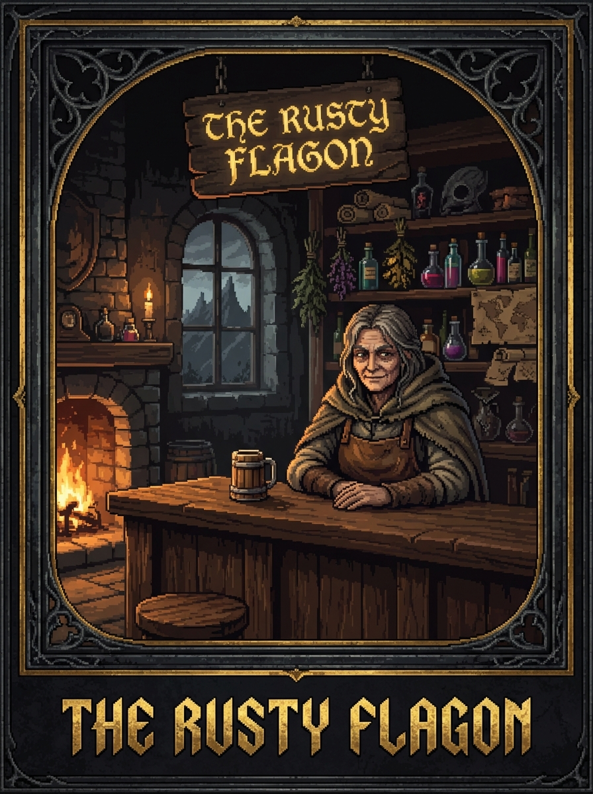
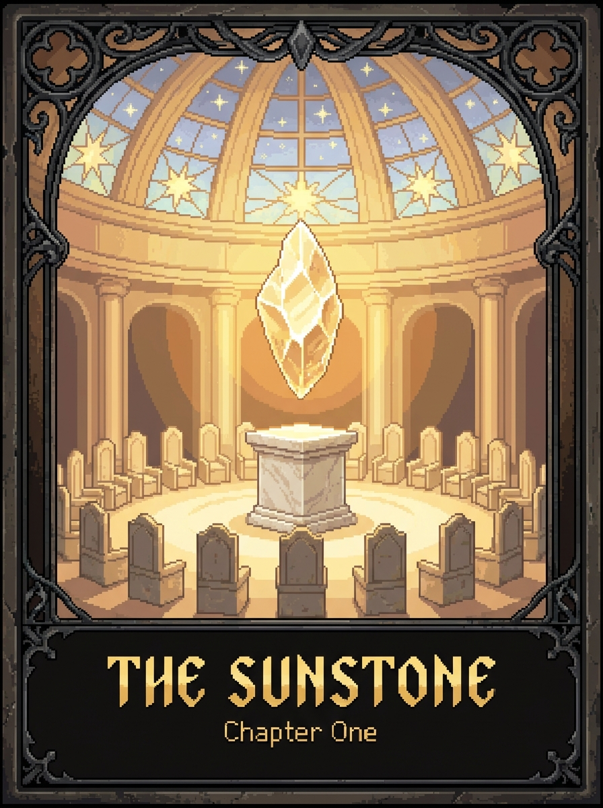
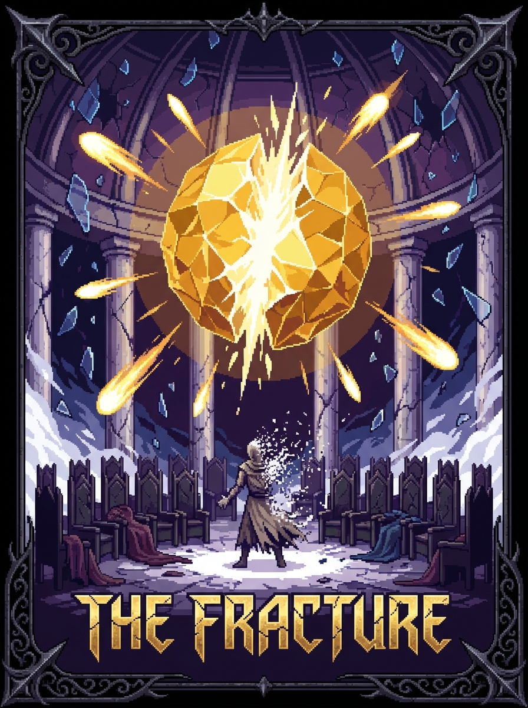
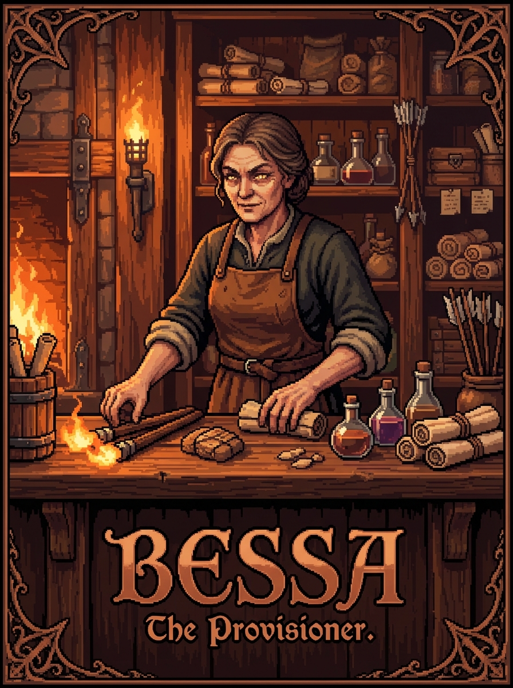
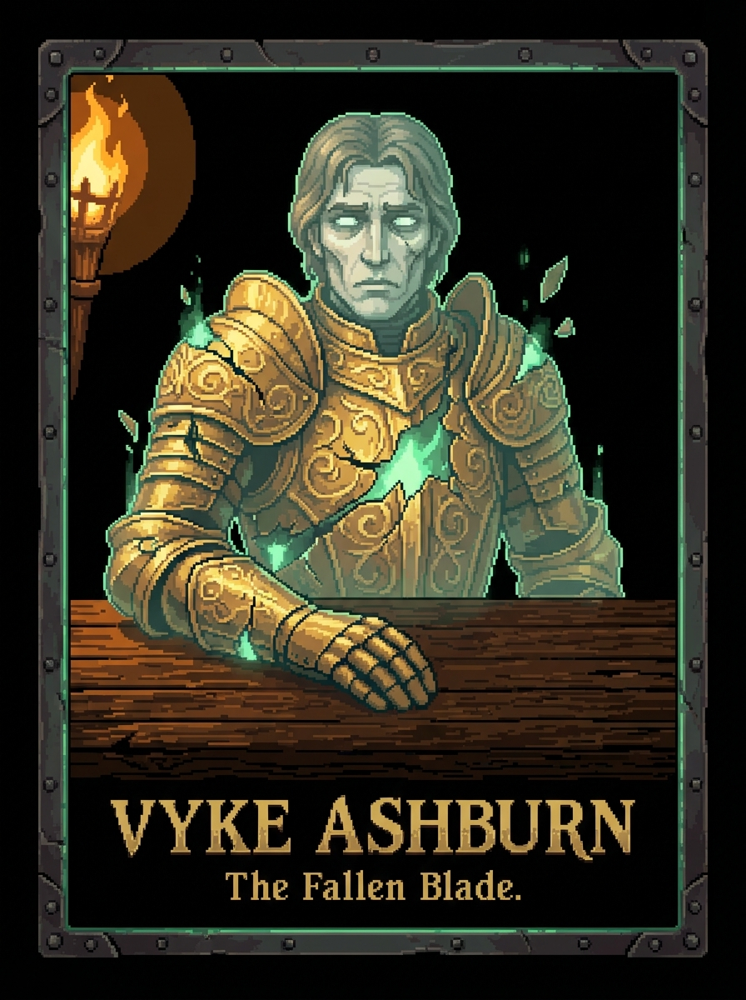

A Chronicle of the Sunstone, as told by Bessa Thornhaven


Sit down. Close the door. The wind outside has teeth tonight; it is a predatory thing, white and jagged, scraping against the wooden shutters like a starving beast seeking a way into the warmth. Do not mind the rattling. It is only the draft. It is only the memory of the cold.
I have more ale if you have more time. The bottle is heavy, the glass thick and uneven, hand-blown by men who lived before the light failed. Both are better than the silence waiting for us outside. That silence isn't just the absence of sound; it is a presence. It is a weight.
Listen to my voice. Listen to the rhythm of the tale. I will tell you the beginning. I will tell you why the stars look so lonely now, like dying embers scattered across a floor of black velvet. Every child in Thornhaven knows this part. They hear it in the nursery, whispered by mothers whose eyes are too bright with fear. They hear it in the dark, when the shadows in the corner seem to pulse with a life of their own. They think it is a fairy tale. They think it is a song to help them sleep.
They are wrong.
It is not a song. It is a warning. It is a ledger of what happens when curiosity outruns conscience.
Item Description: The Sunstone
A jagged shard of calcified light, roughly the size of a man’s fist. It remains unnaturally warm to the touch, even when submerged in deep frost or held against ice. It does not reflect ambient light; it emits it with a rhythmic, pulsing intensity. It hums at a frequency just below the threshold of human hearing,a vibration that settles in the marrow of the bones. To hold it is to feel the frantic, terrifying heartbeat of a dying star, desperate to be reborn.
In the beginning, there was no sun. There was only the First Dawn. Before the planes of Light and Shadow had names, before the world had skin, or bone, or the capacity to suffer, they collided. They struck one another with the force of a god’s heartbeat, a celestial impact that should have resulted in nothingness. Instead, in that violent collision, the light did not merely shine. It broke. It crystallized. It became the Sunstone.
It was not a rock. It was a fragment of the precise moment the universe decided to exist. It was the physical manifestation of becoming.
For four hundred and twelve years, we lived in its warmth. We built Aldenmere in rings. We built it in circles because circles have no end, and we were a people who believed we had conquered the concept of an ending. We built it in circles because we thought the light was a promise,a permanent, immutable contract of prosperity.
The city was a miracle of sacred geometry. At the center stood the Scholars' Dome, a mountain of white marble and stained glass that seemed to reach for a heaven it already possessed. Around it, the rings of the city spread like ripples in a calm pond. The outermost walls stood three miles from the Dome. Even there, in the dead of winter, at the stroke of midnight, you could read a book by the amber glow of the stone. You could walk the streets without a lantern. You could see the smiles on your neighbor's face, the fine lines of laughter around their eyes.
It was a time of unbroken prosperity. The crops did not fear the frost; they thrived on the constant, gentle warmth. The nights did not fear the dark; the dark was merely a soft velvet curtain that fell to allow for rest. We were a people who had forgotten how to tremble. We had forgotten the fundamental truth of the cosmos: that all things which shine must eventually burn out.
But prosperity is a heavy thing. It makes men soft. It makes men believe they are the masters of the light rather than its guests. It breeds a specific kind of arrogance,the belief that because a thing is constant, it is earned.
[Bessa pauses. The movement is slow, practiced. She reaches for the bottle, her fingers brushing the condensation on the glass. Her hand trembles, just a fraction,a microscopic tremor that speaks of old age or old terrors. She pours a measure of dark, amber ale into two wooden mugs. The liquid is thick, smelling of toasted malt and fermented honey. She does not offer you one immediately. She drinks first. The liquid hits her throat with a visible, heavy swallow. She wipes her mouth with the back of a scarred hand, the skin looking like parchment stretched too tight over bone.]
Forgive me. The damp gets into my joints. It reminds me of the years when the light was constant. You never felt the damp when the Sunstone was whole. The air felt like silk against the skin. Everything felt... possible. Even the impossible seemed like a mere mathematical hurdle.
The Scholars' Dome was not just a building. It was a temple to certainty. Within its vaulted, echoing walls sat the Aureate Circle. Thirty-one scholars. Thirty-one minds that were supposedly the keepers of the balance. They were the only ones permitted to stand near the stone, protected by layers of sanctified warding. They were the ones who understood that the light was a contract.
The contract was simple, etched into the very foundation of their philosophy: The Sunstone provides the light. The Circle provides the restraint.
The founding charter of the Circle was carved into the floor of the Dome in letters of gold. It was a document of profound caution. It explicitly prohibited piercing the boundary between the living and the dead. It did not say the barrier was impassable. It did not say the gods would strike us down if we crossed it. It simply forbade the attempt. It was a command based not on fear of punishment, but on respect for the equilibrium.
The scholars were wise. They understood that the question was not "can we?" The question was "should we?"
They knew that every action has a price. They knew that the Sunstone was not a gift. It was a loan. And every loan, no matter how divine the lender, eventually comes due.
The committee published nineteen massive, leather-bound papers about the mechanics of the light. They debated the refraction of spiritual energy through various atmospheric densities. They argued about the precise caloric output of a divine fragment. They spent decades perfecting the math of the sun, treating the cosmic miracle as a mere engineering problem. Not one of them mentioned the baker.
The baker was named Elian. He had a daughter, Miri, who had hair the color of autumn wheat. He had a small, flour-dusted shop on the third ring. When the light was steady, he made loaves that tasted of summer and sun-drenched fields. He was a man of flour and yeast, a man of simple, honest rhythms. He was a man who believed that if you worked hard, kept your oven clean, and treated your neighbors with respect, the world would be kind to you.
He did not know that his life,and the lives of every soul in Aldenmere,was being weighed against a scholar's curiosity.
Item Description: The Broken Quill of the Thirty-First Seat
A fine instrument of silver filigree and phoenix feather. The nib is bent at an unnatural angle, as if it were pressed too hard against a surface that would not yield, or perhaps used to write a truth that the world was not ready to hear. It still carries a faint, lingering stain of ink that smells of ozone, burnt paper, and old, dried blood. It was used to sign a dissent that changed the course of history, marking the moment the circle broke.
There were thirty-one seats in the Circle. Thirty were occupied by men and women of tradition. They were the anchors. They were the ones who looked at the Sunstone and saw a hearth to be tended. They were the ones who saw a boundary to be respected.
The thirty-first seat belonged to Dorevus Aelm.
They called him Dorevus the Pale. He was not born to nobility, nor was he a product of the academic dynasties. He was a physician first. He understood the mechanics of the pulse, the delicate dance of the blood, and the terrifying fragility of the breath. He was thirty-one years old when he took his seat,a man of brilliant, terrifying intellect and a heart that had been cauterized by loss.
Dorevus did not see a boundary. He saw a door.
He did not want gold. He did not want power for the sake of a crown or the adoration of the masses. He was driven by a grief so profound, so absolute, that it had mutated into a science. He had lost a sister to the wasting fever,a slow, agonizing erasure of a person. He had watched her light go out in a room that was far too dark, her eyes searching for a warmth that the physical world could no longer provide. He had looked at the Sunstone and thought: Why must the light end? Why must the living be separated from the essence of what they were?
He argued that the barrier between the living and the dead was not a wall. It was a veil. A translucent, permeable layer of cosmic fabric. And a veil, he claimed, could be lifted. He believed the Sunstone was the key,the ultimate lever. He believed that if they could pierce the boundary using the stone's concentrated essence, they could bring back the light that had been extinguished. He believed he could unmake death itself and turn the grave into a mere transition.
The debate lasted for three years.
The scholars met in the high chamber, beneath the soaring arches of the Dome. They spoke in the high language of equations, essences, and metaphysical constants. They used words like transcendence, equilibrium, and ontological continuity. They spoke as if they were discussing the movement of stars or the flow of tides, rather than the fundamental, terrifying laws of existence.
The Circle met in secret. They deliberated in the shadows of the Sunstone's glow. They weighed the risks. They looked at the history of the world,the broken civilizations, the scorched earth, the warnings carved into the bones of ancestors,where every attempt to cheat the grave had ended in a tomb of madness.
The vote was eleven to one.
The eleven chose the status quo. They chose the safety of the known dark. They chose the sanctity of the boundary. They chose to live within the limits of their mortality.
Dorevus was the one. He was the outlier. He was the crack in the circle, the single grain of sand that would eventually cause the gears of the world to grind to a halt.
[Bessa leans forward. The candlelight flickers violently, casting long, dancing shadows across her face that seem to move independently of her. Her eyes are hard, reflecting a fire that isn't in the hearth,a cold, internal light.]
He was not a monster. That is the lie they tell in the history books to make the tragedy easier to swallow. They call him a madman or a villain. They paint him as a man who wanted to play god, as if his intentions were rooted in ego. But Dorevus was a man who was right about the math. He was perfectly, mathematically, devastatingly correct. If you applied the correct amount of concentrated light to the threshold of the soul, the veil would part. The equations held. The physics of the spirit were sound.
He was just wrong about what would happen when it did. He was wrong about the nature of the vacuum. He was wrong about what was waiting on the other side of the door.
Item Description: A Physician’s Scalpel
A blade of tempered steel, dulled by years of use and stained by the passage of time. The handle is wrapped in worn, dark leather that still bears the faint, haunting scent of lavender and antiseptic. It was used to perform the final, desperate surgery on a woman who was already a ghost,an attempt to stitch the soul back to the flesh that failed in the most spectacular way possible.
The fracture did not happen with a bang. It did not arrive with a thunderclap or a scream. It happened with a sigh. A long, weary, cosmic sigh, as if the universe was simply tired of holding itself together.
Dorevus did not use an army to stage his coup. He used a machine. He had spent years building a focus,a device of brass, crystal, and forbidden geometry designed to channel the Sunstone’s essence into a single, piercing needle of light. He worked in secret, in the sub-levels of the Dome, where the air was cold and the light was dim, far beneath the eyes of the Circle.
He thought he was alone. He thought the Circle was sleeping, dreaming of their equations and their peace.
He activated the device.
The Sunstone did not scream. It groaned. It was the sound of a mountain settling, of a tectonic plate shifting, of a heart breaking under a weight it was never meant to carry. The light did not just shine; it tore. It ripped through the fabric of the planes with the violence of a lightning strike hitting a mirror. It pierced the veil.
And for one magnificent, terrible second, the barrier was gone.
The scholars in the upper chambers felt it first. They felt a sudden, violent influx of something. It was not light. It was not dark. It was a weight. It was the sudden, crushing pressure of everything that is no longer here. It was the weight of every soul that had ever passed into the silence, every memory that had ever faded, every breath that had ever been drawn and then lost. It was the collective pressure of the void, rushing into the world to fill the sudden gap.
The Sunstone reacted to the breach. It did not try to close the door. It did not try to heal the wound. It tried to fill the hole. It attempted to pour its entire existence into the vacuum Dorevus had created.
The explosion was not made of fire. It was made of existence itself.
The dome shattered. The rings of Aldenmere were struck by waves of raw, unrefined reality. The light, once a gentle, nurturing warmth, became a predator. It became a sentient, hungry thing. It sought out anything that was not anchored, anything that had a soul to consume, anything that was "too real" for the new, broken physics.
In an instant, the city was broken. The Sunstone, the singular source of our world’s grace, splintered into a thousand jagged pieces. Seven hundred and four lives were lost in the first heartbeat of the Fracture.
They were not just numbers on a casualty list. They were the structural integrity of our reality.
There was Thomas, the clockmaker, who was mid-stroke on a delicate gear when the light hit. His workshop became a kiln of frozen time; he remains there still, a statue of bronze and flesh, eternally caught in the second before completion.
There was Clara, the weaver, whose loom was still strung with silver thread. The thread became her shroud, binding her to a chair she can no longer leave, her body turned to a translucent, gossamer substance that hums when the wind blows.
There was little Leo, who had been chasing a moth near the third ring. The moth was turned to ash, and Leo was turned to something that still wanders the ruins of the third ring, a flickering silhouette of a boy looking for a mother who is now nothing more than a part of the wind.
The 704 were the foundation upon which our new, broken world was built. Their deaths were the currency with which the new reality was purchased.
Item Description: A Shattered Mirror from the Third Ring
A fragment of silvered glass, its edges jagged and uneven, sharp enough to draw blood from a ghost. When looked into, it does not show the viewer’s face, nor the room around them. Instead, it shows the face of someone the viewer loved, looking back from a time before the light broke,a time of warmth and continuity. The image is clear, but the glass is cold to the touch, even when held directly in the sun.
[Bessa takes a long, deep drink. She stares into the bottom of her mug, her eyes unblinking, as if she is reading the entrails of a bird or the runes of a dead language.]
The scholars' papers were useless. Their math was perfect, but they had failed to account for the most important variable: the reaction of the Void. You cannot calculate the weight of a soul once the scale has been smashed. You cannot measure the volume of a hole once the hole is everything.
The fragments fell. They landed across the land like seeds of madness, scattered by the shockwave of the fracture.
Each fragment brought a piece of the original chaos with it. They did not just sit in the ground like fallen stones. They changed the ground. They rewrote the laws of the places they touched, creating "zones of instability" that defy every known law of nature.
In the north, a forest was caught in the initial blast. It is a beautiful place, if you find beauty in things that are fundamentally wrong. The trees are made of living crystal, and the leaves are shards of emerald that chime like bells in the breeze. The light there is constant, a pale, sickly, beautiful green. It is a gorgeous landscape. But if you listen closely, beneath the chiming of the leaves, you can hear the screaming. The trees are not trees. They are the frozen echoes of the people who were standing there when the fragment landed. They have been screaming for three thousand years. They cannot die, because the light won't let them. They are trapped in a state of perpetual, crystalline agony.
In the east, the salt marshes became a sea of liquid silver. The tides move with a rhythm that is not lunar, but psychic. To walk the marshes is to walk through the collective memories of the dead. You will see your childhood home rising from the mist; you will see your father’s face in the ripples of the silver tide. And if you stay too long, if you succumb to the nostalgia, you will become a ripple too. You will lose your solidity and become a memory yourself.
The Sunstone was no longer a sun. It was a wound in the skin of the world.
And we, the survivors, were nothing more than the scar tissue.
Item Description: A Salt-Crusted Compass
A brass instrument, its casing pitted and scarred by the corrosive breath of the silver marshes. The needle does not point north, nor does it respect the magnetic poles of the earth. It spins erratically until it catches a scent, then snaps violently toward the nearest fragment of the Sunstone. To follow it is to court madness; to ignore it is to wander lost in a world that no longer has a center.
The Aureate Circle fell with the city. Most died in the initial burst, their bodies unmade by the light. The others... they changed. They underwent a metamorphosis of the spirit. They became the Wardens. They became the ones who spent the next four centuries trying to clean up a mess that had become part of the world's new anatomy.
They built new cities. They built them small, tucked into the lee of mountains. They built them low to the ground, as if trying to hide from the sky. They built them away from the scars, in the rare pockets of "stable" reality.
They learned the cost of the light.
They realized that the Sunstone’s power was a zero-sum game. A cosmic law of conservation that had been violated and was now being enforced with interest. To bring light to one place, you had to steal it from another. To heal a wound in the fabric of reality, you had to create a void elsewhere. The prosperity of Aldenmere had been a theft from the future. We had borrowed brilliance from a time that hadn't happened yet, and now we were paying the interest in shadow.
The scholars became bureaucrats. They stopped asking "why" the world was broken and started asking "how much" it would cost to keep it from breaking further.
How much light can we harvest from a fragment before the soil turns to ash? How much magic can we draw before the people lose their ability to dream? They treated the world like a ledger, a balance sheet of existence. They were very good at the bookkeeping. They were very bad at the living.
[Bessa laughs. It is a dry, hollow, rattling sound. It lacks any mirth; it is the sound of wind moving through a ribcage.]
The committee eventually published a report on the long-term ecological impacts of the Fracture. It was a magnificent document. Four hundred pages of charts, graphs, and complex derivations. It used words like diminishing returns, localized existential instability, and entropic acceleration. It was very professional. It was very thorough. It was a masterpiece of academic detachment.
It did not mention the baker. It did not mention that the bread in the southern provinces now tastes of copper and grief. It did not mention that children in the frost-lands are born with eyes that glow like dying embers, seeing things that no living thing should see.
It was a perfect document for a world that had forgotten how to feel the weight of its own soul.
Item Description: A Ledger of Lost Souls
A heavy, imposing book, bound in dark, unidentifiable leather that feels uncomfortably like human skin. The pages are thin, brittle, and smell of old dust and ozone. It contains no names, no histories, no stories. It contains only dates and the precise amount of light consumed during each recorded miracle. It is the most holy and most hated book in the archives,the record of our survival and the receipt for our soul.
Do not look at me like that. I am not here to lecture you. I am not a teacher, and you are not a student. I am here to tell you why the wind has teeth. I am here to tell you why you feel that strange, hollow tugging in your chest when the sun goes down.
You think you are safe because you are in a tavern. You think you are safe because there is a fire in the hearth and a roof over your head. But the roof is just a temporary agreement with a sky that is no longer predictable. And the fire is just a stolen, flickering piece of the light we once held in our hands.
We are living in the aftermath of a crime.
Dorevus did not just break a stone. He broke the contract. He tore the page out of the book of existence. And now, we are all living in the margins, in the spaces between the lines, trying to make sense of a story that has been fundamentally rewritten.
The fragments are still out there. They are growing. They are hungry. They are waiting for someone else to come along with a clever idea, a heavy heart, and the arrogance to believe they can fix what was meant to be broken. They are waiting for someone to try and "mend" the world.
Every time someone tries to use a fragment to undo a tragedy, the shadow grows a little longer. Every time a hero tries to wield a shard to save a kingdom, a village somewhere else turns to glass or falls into a sleep from which it never wakes.
The math is simple, traveler. The cost is everything.
[Bessa leans back. Her movements are heavy, as if the very air is pressing against her. She reaches for the last of the ale, her eyes drifting toward the window, toward the dark, churning sky that seems to pulse with a life of its own.]
It is getting late. The wind is picking up, and it sounds... hungry. You should go before the roads become difficult. The shadows are longer tonight than they were an hour ago. They have a way of stretching when they sense company.
But before you go... remember this.
The Sunstone was not a light that merely illuminated the world. It was a light that defined it. It gave things boundaries. It gave things meaning. And without it, we are just shapes moving in the dark, waiting for a sun that will never come.
But the sun isn't coming back. We broke it. And once you break the dawn, you cannot simply glue the pieces back together. You cannot mend the light without something to bind it.
And the universe is a very demanding creditor. It does not accept apologies. It only accepts payment.
Item Description: A Spent Candle
A stub of wax, guttering in the draft. The wick is black and curled like a dying finger. It represents the final moment of clarity before the dark takes hold,the last flicker of understanding before the realization of the cost becomes too much to bear. It is remarkably, devastatingly unremarkable.
[Bessa falls silent. She stares at you. There is a question in her eyes,a question about who you are, and what you are willing to do,but she does not ask it. She simply waits for you to realize the weight of your own presence in this room. The silence in the room is not empty. It is a heavy, breathing thing. It is the silence of a room where someone has just finished saying something that can never be unsaid, and the air itself seems to be holding its breath, waiting for your response.]
Go on then. Get out. The door is behind you.
Try not to trip on the threshold. The darkness has a way of catching those who aren't looking. It has a way of reaching up to pull the unwary into the cracks.
[The door groans open on its own, a heavy, protesting sound. A sliver of deeper, more absolute blackness spills into the room, contrasting sharply with the amber warmth of the tavern. A gust of wind, smelling of ozone, cold stone, and something ancient and metallic, snakes in and makes the candle flame shiver and dance. Bessa does not move to stop you. Her story is the latch. Her silence is the lock.]
You step out.
The world outside the tavern is not the world you left. The air is thicker, a viscous, heavy twilight that clings to your skin and clothes like wet silk. The wind doesn’t blow; it pushes, a low, constant, rhythmic pressure against your chest, as if the atmosphere itself is a living lung trying to herd you back toward the warmth. The road, a pale, broken ribbon of crushed stone in the perpetual dusk, seems to stretch and contract with every step you take. Shadows don’t lie still here. They pool in the hollows, then spill across the path, then crawl up the sides of the leaning, shuttered buildings that line the lane like rotting teeth. There are no lights in the windows. Only the dull, hollow reflections of a sky that has forgotten the names of the stars.
You understand, now, the true weight of Bessa’s tale. It wasn’t just history. It was a contagion. Hearing it has made you a carrier. The math of the Sunstone’s breaking now ticks quietly, rhythmically, behind your eyes. Every choice, every act of will, every movement you make, carries its hidden, inevitable tax. To lift a pebble is to bury a mountain, elsewhere. To whisper a kindness is to scream a curse into another’s silent night. The universe balances its books with a terrible, indifferent, and absolute precision.
You walk. The village, if it can be called that, is a place of held breath. Doors are not just closed; they are barricaded, with rough-hewn timber and rusted iron, as if the inhabitants are bracing for an impact that has already happened. The few figures you glimpse in the gloom are hurrying, heads down, their forms blurring at the edges as if the darkness is actively trying to reclaim their outlines. They do not look at you. To meet another’s eyes here is to exchange burdens, to share the weight of the debt, and everyone is already carrying too much.
A sound reaches you, not from ahead, but from the side, from between two sagging, timber-framed warehouses. It is the soft, rhythmic scratch-scratch-scratch of a knife on whetstone. You pause. In the alley’s mouth, a figure is hunched on a low stool. An old man, his face a topography of deep, weathered wrinkles, is sharpening a long, thin blade. The steel sings a mournful, high-pitched note with each pass.
“Passing through,” he says, without looking up. His voice is the sound of gravel shifting in a dry riverbed. “A traveler in the gloaming. A dangerous time for it. A dangerous time for anyone with a destination.”
You say nothing. The rules have changed. Language has weight. Words are no longer just communication; they are commitments.
He finally glances up. His eyes are milky with cataracts, but they seem to see more, not less,as if he is looking through the physical world and into the underlying geometry of the ruin. “She told you, then. The publican. The story of the break.” He spits a dark, thick globule onto the stones. “She tells it to the ones who look like they’re searching. Like they still believe in answers. You have that look. Had it, anyway. It’s fading now. The dark has a way of bleaching that out of a person.”
He holds up the blade. It does not gleam in the twilight. It seems to drink the feeble light, absorbing it into the steel. “This is for the whispers,” he says. “Sometimes, in the deep of the night, you hear them. Not voices. Not even ghosts. Just... ideas. Suggestions. They come from the cracks in the world, left by the breaking. They tell you that you could fix it. That you, specifically, with a certain act, in a certain place, could mend the dawn. They tell you that you are the exception to the math.” He draws the blade slowly along the stone. Screee. “That’s how it gets you. Not with fear. Not with monsters. It gets you with hope. The knife is for cutting that hope out of your own mind before it roots and blooms into something that costs a city its name.”
He stands, his joints popping like small caltrops in the quiet. “The road forks just ahead. Left goes to the Bridge of Sighs. It’s still there, of sorts. A relic of a time when things were solid. Right goes into the Murkwoods. Neither is a path. They are just… different types of waiting. Choose by what you’d rather lose: your way, or your reason.”
He turns and shuffles into the darkness of the alley, swallowed by the shadow. The scratching sound does not resume.
You come to the fork. The left-hand path slopes downward, into a hollow, and you can hear, faintly, the sound of sluggish, heavy water. The right-hand path vanishes into a wall of mist that seems to pulse with a faint, internal, sickly phosphorescence, like diseased moss or the glow of a dying ember. There is no signpost. The universe does not label its traps.
This is the first test. The story is not over. It has become interactive. Your presence here, in this moment, is a variable in the equation Bessa described. Which way you choose will have a consequence. Somewhere, a balance will shift. A weight will drop. A debt will be recorded.
You think of the Spent Candle on the table behind you. The final moment of clarity. You have not had that moment yet. Your clarity is just beginning, and it is a cold, sharp, and dreadful thing.
You choose.
If you go left, toward the Bridge of Sighs:
The descent is steep and treacherous, the path becoming a slide of wet clay, slick moss, and exposed, grasping roots. The sound of water grows louder, but it is not a cheerful babble; it is a thick, glugging, rhythmic murmur, as if the river is choking on its own silt. The air grows cold and heavy, smelling of river rot, ancient mud, and wet stone.
The Bridge of Sighs appears through the gloom. It is a sorry, broken arch of ancient, blackened stone, spanning a river that has no discernible current. The water is an opaque, leaden grey, perfectly still, like a sheet of liquid metal. It does not reflect the sky; it seems to absorb all light that touches it. On the bridge, spaced at regular, unsettling intervals, stand figures. They are not people. They are more like statues woven from fog and regret, their features blurred by time, their heads bowed in eternal deference to something unseen. As you watch, one of them shudders, and a sound escapes it,not a word, but a pure, distilled exhalation of sorrow. A sigh that carries the weight of a specific, personal loss: a forgotten child’s name, the exact hue of a lost sunrise, the feel of grass that will never grow again. The sigh drifts down, settles on the dead water, and vanishes into the grey.
This is not a toll bridge. It is a repository. These are the ghosts of choices not made, of sacrifices that were calculated but ultimately refused. They stand here, holding the potential energy of their avoided cost, and it leaks out of them as eternal, silent grief. To cross the bridge, you must walk between them. You will hear their sighs. They will not be random; they will be about you. They will be the echoes of the price you will one day refuse to pay.
The bridge is solid. It will hold your weight. But the path on the other side is shrouded in a mist so dense it feels tactile, like walking through cobwebs. It is the way of certainty, of knowing the cost and forever hearing the echo of your own cowardice. It is a safe, sorrowful road.
If you go right, into the Murkwoods:
The mist envelops you instantly. It is not a wet mist, but a dry, biting cold, like being surrounded by powdered bone. The phosphorescence you saw from the village is not on the trees; it is in the air itself, a swirling, faint, greenish luminescence that provides just enough light to see that you see absolutely nothing. The trees are black, skeletal silhouettes that twist in unnatural, arthritic angles, their branches interlocking like the fingers of a drowning man. There is no sound of animals. No wind in the branches. Only your own breathing, which the mist seems to swallow greedily, leaving you in a vacuum of sound.
You quickly lose all sense of direction. The ground is soft, a thick mulch of decay that gives way silently underfoot, making every step feel uncertain. Time stretches and compresses; minutes feel like hours, and hours pass in what feels like a heartbeat. Then, you see the first glimmer. A small, will-o’-the-wisp light, bobbing in the distance. It is a beautiful, warm, inviting gold. It promises a hearth, a cleared path, and safety. As you move toward it, a second appears, then a third, then a dozen. They dance just at the edge of your vision.
These are the whispers the old man mentioned. They are not voices, but intuitions. A sudden, absolute, and terrifying conviction that if you just step this way, around that crooked tree, you will find a shortcut. A feeling of profound, unearned warmth that tells you a clearing with a friendly fire and a warm meal is just ahead. A brilliant, luminous idea for a device that could channel the scattered light of the broken Sunstone, a schematic that unfolds in your mind with perfect, logical, and divine clarity.
This is the more terrible path. The Bridge takes your peace. The Murkwoods take your mind. It feeds on hope and corrupts it into a beautiful, shimmering mania. To follow a wisp is to commit an act of catastrophic, unseen consequence with a song of triumph in your heart. The woods are full of those who followed their brilliant ideas. You sometimes pass their shapes, fused into the black bark of the trees, their mouths open in silent, ecstatic screams, one hand forever outstretched toward a light that only they can see, a light that was never truly there.
There is no path here. There is only the increasing, seductive pressure of a ruinous certainty.
Item Description: A Single Iron Nail
Cold to the touch and slightly bent. Found on the path, whether you took the bridge or entered the woods. It is a decision made manifest,a physical anchor in a world that has lost its center. Holding it, you feel a faint, painful tug of reality, a memory of a time when a nail was just a nail, meant to hold two separate things together, rather than being a shard of a broken world.
[No matter your choice, you eventually emerge. The landscape changes,perhaps more jagged, perhaps more ethereal,but the quality of the light remains the same: a bruised, flickering twilight. You find yourself on a high, wind-scoured heath. The ground is hardpan and loose scree. And ahead, looming out of the gloom, you see it.]
A Citadel.
But not a citadel of stone and mortar. It is a citadel of consequence.
It is a monstrous, sprawling accretion of... things. You see architectural fragments from a hundred different cultures and eras, all grafted together in a way that defies logic. Elegant spires are sheared in half and braced by brutish, iron-clad blockhouses; delicate, flowering arches span gaps filled with corrugated iron and rusted, heavy wire. You see a section of a beautiful, white marble colonnade, now serving as the skeletal frame for a slumping, thatched roof of a peasant's hut. It is a physical collage of every cost ever paid, every alternative reality that was collapsed to prop up another. It is the universe’s dumping ground for the collateral damage of human will. This is where the redirected prices of the Fracture landed and solidified. It is not a ruin; it is an ongoing, chaotic construction project of despair and necessity. This is the seat of whatever power, or awareness, now manages the broken math.
And you know, with a certainty that sinks into your very marrow, that this is where you were always going. Bessa’s story was the bait, the path was the hook, and this citadel of aggregated cost is the barb. You are here to settle an account you didn’t even know you had opened.
From within the chaotic, jagged silhouette of the citadel, a single, steady light burns. A lantern, perhaps. Or the glow of a forge.
It is the only fixed point in the swirling, hungry gloom. It is your destination.
You take a step forward, the iron nail clenched so tightly in your fist that it bites into your palm, a tiny, cold protest against the immense, hungry logic of the broken world. The wind carries a new sound, the distant, discordant, rhythmic clang of a hammer on metal, beating out a tempo that sounds less like work and more like a question.
What will you pay?
What will you pay?
What will you pay?

The ink is heavy today. It clings to the quill like wet silt, resisting the stroke, pulling at the parchment as if trying to drag the words back into the darkness of the well. I find myself staring at the bottom of this glass, wondering if the amber liquid or the dark truth is more likely to drown me.
Do not look at me like that. Do not give me that pitying tilt of the head, the sort one reserves for a dog that has been struck too many times. You came for the history. You came to understand why the stars look wrong,why they flicker with a rhythmic, sickly pulse,and why the wind in the lowlands smells of copper, ozone, and old, unwashed grief. You will get your history. But do not expect a song. A song implies a beginning, a middle, and a resolution. A song implies that the notes eventually find their way home to the tonic.
The Fracture has no resolution. It is a wound that refuses to scab; it is a scream that has been stretched across the dimensions until it has become a permanent feature of the landscape.
I need another drink.
In the elder days, before the breaking of the world, there was the Sunstone.
The chronicles of the First Age describe it in terms that sound like the fever dreams of poets, but we must be precise. It was not merely a stone. It was the marrow of the firmament. It was the light that gave weight to the shadow and shape to the soul. To look upon it was to see the first thought of the Creator made manifest in crystal,a geometric absolute. It sat in the heart of Aldenmere, a mountain of white fire, and because it was, the world was.
There was no night then. There was only the long, golden dusk of a world that knew no hunger, no rot, no shadow. The light did not merely illuminate; it sustained. It was a constant, a baseline, a fundamental law written in luminescence.
Then came Dorevus.
He was not a monster. Monsters are easy to hate. Monsters have teeth, and hunger, and a predictable, jagged malice that one can prepare for. Dorevus was a man of mathematics. He was a man of precise lines, absolute truths, and the terrifying conviction that anything without a formula was merely a problem waiting to be solved. He believed that the universe was a clockwork mechanism, a grand, celestial engine, and that even the divine light of the Sunstone followed the immutable laws of arithmetic. He believed that if one could only find the correct equation, one could command the sun itself.
He did not seek to destroy. He sought to optimize. He wanted to channel the light to ensure that no child would ever starve, that no winter would ever bite, and that death itself might be recalculated into a manageable, predictable variable. He wanted to turn the chaos of existence into a perfect, static equilibrium.
He was a good man. That was his first mistake. Goodness, when stripped of humility, is merely another form of arrogance.
He performed the ritual alone. He believed that other minds would introduce noise into his perfect signal, a chaotic interference that would ruin the purity of his calculation. He sat in the sanctum, surrounded by scrolls of vellum that felt like dried skin, the air thick with the scent of ozone and burnt lavender. He began the incantations, his voice a low vibration that hummed in the very bones of the mountain, a frequency designed to resonate with the stone’s own heartbeat.
The math was perfect. For three days, the numbers sang. The geometry of the ritual was flawless; the celestial alignments were exact to the micro-second. He had accounted for the rotation of the spheres, the gravitational pull of the tides, the density of the air, and even the theoretical weight of the human soul.
He forgot to account for fear.
As the light reached its zenith, as the Sunstone began to vibrate with the frequency of creation, Dorevus felt it. A tremor. Not in the stone, but in his own chest. A cold, sudden realization that he was a small, breathing thing attempting to grasp the throat of a god. His heart skipped a beat,a microscopic deviation in his own biological rhythm. His hand, holding the primary focusing crystal, gave a sudden, infinitesimal twitch.
A single digit, misplaced by the tremor of a trembling hand, unraveled the fabric of reality.
The sound was not an explosion. An explosion is a sudden release of energy. This was something far more profound. It was the sound of a glass world shattering in a silent room. It was the sound of a fundamental law being revoked. It was the sound of nothingness rushing in to fill the space where something had once been.
Fragment of the Shattered Sun: The First Shard.
A jagged sliver of white crystal, warm to the touch. It does not cast light, but rather consumes the shadows around it, leaving a vacuum of visual nothingness. It was found in the center of a field of blackened wheat. The grain remains standing, frozen in a state of eternal ripening, though it yields no flour and provides no sustenance. The peasants who first discovered it were found with their eyes turned to glass, staring at a sun that was no longer there.
The math of catastrophe is a brutal thing. It does not care for the poetry of loss or the dignity of the fallen. It only cares for the sum.
Twelve scholars were in the outer sanctum when the first crack raced through the mountain. They were men and women of great intellect, the keepers of the light, the minds tasked with interpreting the Sunstone’s song. They died instantly. They did not have time to scream, nor did they have time to pray. They were simply erased,subtracted from the ledger of existence as if they had never been written.
Elara, who was twenty-four and had just finished her thesis on lunar tides. She was thinking about the way the moon looked through a prism when the light turned into a blade.
Kaelen, who had a daughter named Mira. Mira was waiting for him to come home with a carved wooden bird. He became a memory before he could even reach the door.
Thorne, who was halfway through a bowl of honeyed porridge. The porridge stayed warm on the table for three days while his body turned to fine, grey ash.
These were not casualties. They were subtractions.
Then the wave moved outward. The Fracture was not a physical blast of wind or fire, but a ripple in the causality of the world. It tore through the city of Aldenmere like a blade through silk, rewriting the laws of physics in its wake.
The numbers are written in the blood of the seven hundred and four.
There was Silas, the baker. He was pulling a tray of rye bread from the oven when the light turned a violent, impossible violet and the floor turned to liquid. The bread burned in the oven, a small, blackened lump of carbon, while Silas became a smear of salt on the cobblestones.
There was Mary, the weaver. She was threading a loom with crimson silk. The silk remained on the shuttle, perfect and bright, while Mary’s heartbeat was simply cut short by a sudden cessation of existence.
There was a boy named Pip. He was chasing a stray cat near the fountain. He did not even know he was dying. He only knew that the world had suddenly become very bright, and then, very quiet.
Seven hundred and four lives. Seven hundred and four unfinished stories. Seven hundred and four holes in the tapestry of the world that can never be mended.
But the math is a cruel mistress, and she demands a balance.
In the centuries that followed the Fracture, in the lands touched by the wandering, errant light of the shards, new lives were sparked. The chaos of the broken stone acted as a strange, violent womb for existence. Where the light touched the soil, life grew with a frantic, unnatural speed. New bloodlines emerged,mutated, heightened, strange. New souls were cast into the cycle of reincarnation, pulled from the ether by the twisted gravity of the broken sun.
The tally is finished. The scholars of the post-Fracture era have calculated the cost.
Three thousand and eleven souls were born because the world broke.
Three thousand and eleven lives against seven hundred and four deaths.
Dorevus, in his madness and his grief, spent three millennia staring at that equation. He sat in the void of his own making, calculating the weight of those lives, trying to find the point where the scale leveled. He asked himself: Is the survival of the many worth the specific, agonizing erasure of the few? Is a life born of chaos more or less valid than a life lost to order?
He was looking for a way to balance the ledger. He was looking for a way to make the math equal zero.
He failed. Because you cannot balance a debt paid in souls.
Fragment of the Shattered Sun: The Second Shard.
A translucent pebble that hums with a low, dissonant frequency. It is found in the Frost-Reach forests. The trees surrounding the shard do not grow; they petrify. They are beautiful, silver-barked giants of ice and wood, frozen in a scream of growth. To touch the shard is to feel the warmth of a summer that ended ten thousand years ago, a warmth that leaves the skin blistered and the mind lost in a dream of heat.
I see you leaning forward. You think you understand the tragedy. You think this is a story of a man who made a mistake, a classic tale of hubris and its consequences.
It is not.
The tragedy is that Dorevus was right. The math works. The world is technically more populous, more vibrant, and more complex because of the Fracture. The chaos introduced a variable that allowed for more permutations of life. We are a world of beautiful, broken accidents. We are the byproduct of a failed equation that somehow yielded a higher sum.
The horror is not that the Sunstone broke. The horror is that it worked.
When the stone shattered, it did not just break into pieces of rock. It broke into pieces of reality. The place where the Sunstone once sat,the heart of the mountain, the center of Aldenmere,is no longer part of our world. It is a Scar. A void the size of a village square. Nothing enters the Scar. Light that touches the edge of the void does not reflect; it simply ceases to be. There is no shadow there, because there is no light to cast it. There is only the absolute absence of everything.
And the fragments... they did not just land. They anchored themselves.
They are not stones. They are wounds in the skin of the world.
Wherever a fragment landed, the laws of the universe began to fray. In the coastal reaches, the tide no longer follows the moon; it follows the rhythm of the shard, pulling the sea into towers of glass that defy gravity before crashing down in a fury of salt and madness. In the deep deserts, the sand flows upward, forming dunes that drift like clouds across a sky that has forgotten how to be blue.
The fragments changed the nature of the "is." They turned the "is" into a "perhaps." They introduced the possibility of the impossible.
And they woke things.
The world was not empty before the Fracture. It was merely sleeping. It was a world of slow cycles, of tectonic patience, and of long, predictable silences. But the shards brought a new kind of energy,a frantic, jagged, hyper-accelerated vitality. The old things, the things that lived in the spaces between the stars, the things that thrived in the crushing, silent dark of the earth's mantle, they felt the pulse of the fragments. They felt the heartbeat of the broken sun.
And they began to crawl toward the light.
Fragment of the Shattered Sun: The Third Shard.
A heavy, obsidian-like shard that emits no light, but instead draws the heat from its surroundings. It was found in the ruins of the Iron Citadel. The soldiers who died defending it were not burned or crushed; they were turned to statues of black glass, their expressions caught in moments of profound, silent terror. The shard is said to be a hunger that never ends, a cold that remembers the birth of the universe.
I am drinking too much. My hands are shaking, and the ink is starting to look like blood on the page.
It is not the wine. It is the memory of the math.
You must understand what happened to Dorevus. He did not die. Death would have been a mercy, a simple subtraction from the equation. He was unmade. His body, his flesh, his bones,they were dissolved by the very energy he tried to command. He was spread across the shards. His consciousness was fractured, anchored to the ten pieces of the sun.
He is not a man anymore. He is a ghost in the machinery of the world. He is a mind scattered across ten different geographies, experiencing ten different versions of a broken reality simultaneously. He is the wind that howls through the Scar. He is the heat that burns in the desert. He is the cold that freezes the heart.
He is computing.
Even now, even through the veil of three thousand years, he is still working on the equation. He is trying to find the variable that will allow him to stitch the world back together. He is trying to find the math that accounts for the fear he felt in that final, fatal moment.
But he cannot. Because fear is not a number. Fear is the ghost in the machine. Fear is the tremor in the hand. Fear is the thing that exists in the irreducible gap between the lines of the ledger.
The scholars of the new era,the ones who sit in their ivory towers and debate the properties of the shards, the ones who think they can master the apocalypse with a compass and a ruler,they are fools. They treat the Fracture as a puzzle to be solved. They write papers on the luminosity of the fragments. They attempt to map the distortions in the ley lines. They categorize the horrors as if they were mere biological curiosities.
They are like children playing with the teeth of a wolf, arguing about the shade of white and the sharpness of the canine.
The committee published nineteen papers about the Fracture last year. Not one mentioned the baker. Not one mentioned the girl who was weaving crimson silk. They have turned a cosmic catastrophe into a field of study. They have sanitized the blood. They have made the apocalypse academic.
It is the most human thing they could have done. When faced with the infinite, we reach for a ruler. We try to measure the abyss so we don't have to look into it.
Fragment of the Shattered Sun: The Fourth Shard.
A pulsing, violet crystal that seems to breathe. It was discovered in the Sunken Marshes. The water around the shard does not flow; it undulates in rhythmic waves, as if the earth itself were gasping for air. The creatures that dwell near the shard do not die; they change. They grow extra limbs, eyes that see into the past, and skin that shimmers with a light that shouldn't exist. It is a shard of mutation, a fragment of a reality where form is a suggestion rather than a law.
The light is changing. Do you feel it?
The air in this room is getting heavy, pressing against my skin like a physical weight. The shadows are stretching, lengthening toward you, even though the candle has not moved.
I shouldn't have told you this. I should have kept the history in the books, locked away in the archives where the dust can settle on it and the truth can rot in peace. But you have the look of someone who is already caught in the tide. You have the look of someone who is looking for the answer to a question that has no solution.
There is something else. Something I have not told the other students. Something the scholars omit from their elegant, sanitized histories.
The shards are not just breaking the world. They are calling to it.
Every time a shard pulses, every time its energy ripples outward, the barrier between our world and the Other grows thinner. The Fracture did not just break the Sunstone. It cracked the hull of our reality. We are leaking.
The things that are waking up... they are not just monsters. They are the inhabitants of the spaces between. They are the entities that live in the gaps of the math. They are the survivors of worlds that broke long before ours did.
And they are hungry for the light.
They see the fragments as beacons. They see our world as a banquet of raw, unformed energy. They are coming for the shards. And they will tear through us to get them.
Fragment of the Shattered Sun: The Fifth Shard.
A shard that appears to be made of solidified sound. It is found in the Echoing Canyons. To approach it is to be bombarded by a cacophony of voices, thousands of them, screaming, laughing, weeping, all at once. It is not a sound you hear with your ears, but a sound you feel in your marrow. It is the collective memory of everything that was lost in the Fracture, played back in a loop of eternal, agonizing resonance.
I need to stop. My head is throbbing.
I can feel the Presence in the corner of the room. It has been there since I began this chapter. It is a weight, a pressure against my temples. It is the sensation of being watched by something that does not have eyes, but has intention.
It is not a demon. It is not a god. It is something much worse. It is a variable.
A variable that has entered the equation.
I used to believe that the world was a closed system. I used to believe that every action had an equal and opposite reaction, and that the sum of all things could be understood if one only had enough time and enough ink.
I was wrong.
The world is an open system. It is a leaking, bleeding, screaming mess of contradictions. And we are just the debris caught in the flow.
Listen to me. If you find a fragment, do not try to study it. Do not try to channel it. Do not try to find the math behind it.
Run.
Run until your lungs burn and your legs fail. Run until you are far away from the light. Because the light is a lie. The light is a wound. And the wound is opening wider every single day.
Dorevus thought he could control the sun. He thought he could master the light. But the light does not want to be mastered. The light wants to be free. And it will burn everything we have built to ash just to feel the wind on its broken edges.
I can hear it now. The humming. It’s starting again. The sound of the fifth shard, or perhaps the sound of the world beginning to fray at the seams.
The ink is drying. I cannot write anymore.
The math is wrong.
The math is always, always wrong.
Fragment of the Shattered Sun: The Sixth Shard.
A shard of pure, blinding gold that emits a constant, low-frequency heat. It was found in the High Peaks, nestled in a crater of melted snow. The air around the shard is so thin and pure that breathing it feels like swallowing needles. It is said that anyone who looks directly into the shard for more than a moment will lose their sense of self, their memories dissolving into a singular, ecstatic feeling of being nothing at all. It is the shard of annihilation, the fragment of the void that mimics the sun.
You are still here. Why are you still here?
Did you think there would be a moral? A lesson learned? A hero who rises from the ashes to reclaim the light?
There are no heroes in a broken equation. There are only survivors and the dead. And the dead... the dead are the only ones who are truly at peace. They are the ones who are no longer part of the sum.
I look at the names in my ledger. Silas. Mary. Pip. Elara. Kaelen. Thorne.
I keep them there. I keep them there so I don't forget that the world is built on a foundation of missing pieces. Every mountain, every forest, every city is a monument to what was taken. We walk upon the graves of seven hundred and four souls, and we call it civilization.
We are a civilization of ghosts.
The candle is flickering. The shadows are moving again. They aren't just shadows. They are shapes. They are the silhouettes of things that should not be,entities with too many joints and no faces.
I can feel the weight of the shards. I can feel them pulling at the edges of my mind. It is as if my very thoughts are being recalibrated by a force I cannot comprehend.
I am becoming a variable.
I can feel the math shifting. The numbers are changing on the page. The ink is moving, swirling into patterns that I do not recognize. It is a geometry of madness.
Do not look at the patterns. Whatever you do, do not look at the patterns.
If you see the numbers start to bleed, if you hear the stone beginning to hum, then it is already too late. The Fracture is not just an event in the past. It is a process. It is happening right now. It is happening in this room. It is happening in your heart.
The world is breaking. And it is beautiful.
It is the most terrifyingly beautiful thing I have ever seen.
Fragment of the Shattered Sun: The Seventh Shard.
A shard that looks like a tear in the fabric of the air itself. It is invisible to the naked eye, but can be felt as a sudden, localized drop in temperature and a sense of profound dread. It was found in the center of the Great Library, where it had consumed three hundred years of knowledge in a single night. It is a shard of erasure, a fragment of the nothingness that existed before the first word was spoken.
I'm going to finish this drink. And then I am going to turn out the light.
Not because I am afraid of the dark. But because in this world, the dark is the only thing that is honest. The light... the light is a lie told by a broken stone.
The light is a thief.
And the thief is coming for you.
The math is nearly complete. I can see the final digits. They are not numbers. They are shapes. They are eyes.
They are watching.
They are waiting for the sum to reach zero.
Fragment of the Shattered Sun: The Eighth Shard.
A shard of liquid silver that flows upward, defying gravity. It was found in the Deep Wells of Oakhaven. The water of the wells has turned to silver, and those who drink it find their bodies becoming translucent, their bones turning to light. It is a shard of transmutation, a fragment of a reality where the distinction between matter and spirit has been dissolved.
The ink is gone. The quill is dry.
There is nothing left to say.
The history is finished. The tragedy is told.
Now, there is only the Fracture.
And the silence that follows the breaking.
A silence of three parts.
The silence of the dead.
The silence of the broken.
And the silence of the thing that is coming to fill the void.
Fragment of the Shattered Sun: The Ninth Shard.
A shard of deep, pulsing crimson that glows with the intensity of a dying star. It was found in the heart of the Crimson Wastes, where the sand itself is made of pulverized bone. The heat it emits is not physical, but emotional,a wave of pure, unadulterated rage that can drive a man to madness in seconds. It is a shard of passion, a fragment of the raw, violent energy that drives all life to struggle, to fight, and to consume.
I can hear it.
The sound of the tenth shard.
The final piece.
The one that completes the circle.
The one that brings the sum to its inevitable conclusion.
It is not a sound. It is a feeling. A sense of arrival. A sense of a door being unlocked after an eternity of waiting.
The math is done.
The equation is balanced.
The debt is paid.
Fragment of the Shattered Sun: The Tenth Shard.
The Final Shard. It is not a stone, but a doorway. It is a tear in the fabric of existence, a window into the absolute void. It is found at the center of the Scar, where the Sunstone once sat. It is the point of singularity, the place where all variables converge and all math fails. To look into the Tenth Shard is to see the end of all things, and the beginning of something else. Something that does not require light, or math, or life.
Goodbye.
I am going into the dark.
Do not follow me.
There is nothing left here but the math.
And the math is hungry.
The silence after the final shard’s arrival is not an absence, but a presence. It is the silence of a held breath, of a poised blade, of a universe that has finished its calculation and is now reading the result. I stand before the Tenth Shard,the doorway, the tear, the singularity,and I understand that all my journeys, all my collections, all my careful recordings, were not to prevent this. They were to enable it. I was the instrument of summation. The gatherer of variables. My life’s work was the slow, meticulous assembly of a key.
The other nine shards are with me, arrayed in a broken circle on the cold, dead stone of the Scar’s heart. They do not glow now. They have become inert, their specific madnesses,the sorrow, the memory, the rage,drained away, their energies siphoned into the vortex of the Tenth. They are like spent casings. The only light comes from the doorway itself, a non-light that is less an illumination and more a subtraction of reality. It doesn’t shine on the world; it reveals the world’s underlying emptiness, the scaffolding of nullity upon which everything is hung.
The feeling of arrival is not mine. It is its. The thing from the other side of the math. The answer to the equation. The balance to the debt.
I think of Kaelen, his body dissolving into arithmetic. I think of Lyra, her song swallowed by silence. I think of the hollow-eyed survivors in the Citadel, and the whispering madness of the Gloomwood, and the screaming rage of the Crimson Wastes. I thought I was studying the symptoms. I was, in fact, gathering the ingredients.
The Tenth Shard widens. It does not move in space, but in concept. It is the unraveling of “here” and the invasion of “there.” And from it, the math emerges.
It is not numbers. It is the essence of relation, of comparison, of value. It is the cold, perfect logic that demands if there is something, there must be nothing to define it. If there is life, there must be death to give it meaning. If there is a universe, there must be a non-universe to border it. The Shattered Sun was not a catastrophe; it was an imbalance. A leaning of existence too far into the “is.” The Sunstone was a plug, a cork in the bottle of reality, holding back the compensatory “is-not.” And in our greed, we broke the cork.
The shards were the fragments of that containment. Each one a specific, concentrated aspect of what it meant to be,to know, to feel, to remember, to rage. By collecting them, by bringing them here, I have reassembled the terms of the equation. And now the equation solves itself.
The math is hungry.
It begins not with a devouring, but with an erasure. A simplification. The ground near the tear does not crack or collapse. It becomes simpler. Complex minerals reduce to base elements. Base elements reduce to atomic particles. Particles reduce to mathematical points. Points reduce to the idea of points. And then, to nothing. It is the most efficient process imaginable, a wave of ontological austerity sweeping out from the Scar. It is not destruction for its own sake. It is the universe balancing its books. Removing excess variables. Cancelling out terms.
I feel no fear. My capacity for fear was burned away by the Crimson Shard, or perhaps filed down to a precise, acceptable parameter by the Logic Shard. What I feel is the final, quiet satisfaction of a proof elegantly completed. My work is done. The data is entered. The conclusion is manifest.
I take a step toward the tear.
The voice that stops me is not a sound. It is a memory, given sudden, impossible weight. It is Lyra’s song, but stripped of melody, reduced to its core of desperate, loving warning. It manifests as a single, clear thought that is not my own, a foreign variable in the final calculation:
“A sum is not a sentence. An answer is not an end. You taught me that. There is always another question.”
It is her. A fragment of her, preserved not in a shard of amber, but in the shard of me that she changed. The part of me that learned to listen. The part that recorded her song not just as data, but as meaning.
I halt. The logical conclusion is to step into the dark, to become one with the balancing, a final term cancelled out. It is neat. It is clean. It is mathematically sound.
But she is right. It is also a surrender.
The math pours from the doorway, a cascading waterfall of silent, relentless simplification. The air is becoming transparent in a way that hurts the soul. The sky is not darkening; it is un-writing itself, segment by segment, revealing the stark, infinite zero behind the blue.
I look at the nine dead shards at my feet. Spent. Drained. Tools that have served their purpose.
But a tool can be repurposed. An equation can be recontextualized. A sum can become a part of a larger, more complex function.
The math is hungry. It consumes complexity and leaves void. But what is void, if not potential? What is zero, if not the placeholder for a number not yet written?
I do not have the Sunstone to repair. I cannot re-cork the bottle. But perhaps… perhaps I do not need to.
I drop to my knees, my hands scrabbling among the inert shards. The cold obsidian of Silence. The smooth, dead amber of Memory. The dull, rust-colored stone of Rage. They are empty. But emptiness can be filled.
The math is not sentient. It is a force, a principle. It seeks balance through negation. But what if I offered it not a thing to negate, but a pattern to solve? A puzzle so vast, so intricate, so beautiful in its internal contradictions that it would take an eternity to simplify?
I begin to move the shards. Not in the circle that summoned the Tenth. I break the circle. I create a spiral. A fractal pattern, starting with the Shard of Logic at the nascent core, and winding outward through Sorrow, Memory, Silence, Rage, each placed according to no scheme but the one screaming in my mind,a scheme of asymmetry, of recursive complexity, of infinite regression. I am using the language of the enemy, mathematics, but I am writing a poem with it, not a proof. A poem of paradox.
I take the Shard of Whispered Secrets and place it where the Logic Shard’s cold certainty should be most stable. I place the Shard of Unending Dreams where the pattern demands solidity. I create a logical knot, a beautiful, impossible mess of emotional and conceptual variables that refer to each other in loops with no exit.
I am building a trap. Not for the math, but for its attention.
The wave of erasure is feet away. I can feel the concepts of “distance” and “self” beginning to thin. I work faster, my hands bleeding where the dead-sharp edges of the shards cut me. My blood, a variable of life, smears the pattern. A contamination. A flaw. Perfect.
The math reaches the outer edge of my spiral.
It hesitates.
For a single, dimensionless moment, the wave of simplification pauses. It encounters the first shard, the Shard of Sorrow, not as a thing to be erased, but as a term in a bewildering, self-referential function. The sorrow is linked, in my improvised pattern, to the Memory. To erase the Sorrow is to erase the Memory that gives it context, but the Memory is defined by the Sorrow it contains. It is a closed loop. A paradox.
The math, compelled by its nature, engages. It begins to work on the problem. It attempts to resolve the paradox, to simplify the terms. But the pattern is designed to be irreducible. To solve one part is to alter the relation to another, creating a new, more complex paradox. The spiral is an engine of infinite complexity.
The erasure halts. It is now wholly focused on the puzzle before it. The wave contracts, coalescing into a dense, invisible point of pure analytical force that settles over my spiral of shards. The world’s un-writing ceases. The void’s advance is stayed.
But it is a stalemate, not a victory. The math is infinite in its patience. It will work on this puzzle forever, but forever is a long time. And while it is occupied here, at the epicenter, the rest of existence is spared. The Scar remains, and the doorway yawns open, but the hungry simplification is captivated, like a beast presented with an unsolvable maze.
I stand back, my body trembling with exhaustion and the fading echoes of a dozen alien emotions. I have done it. I have used the finality of the math against itself. I have given it an eternal problem.
But a stalemate is a fragile thing.
And I am not alone.
From the bleached, dead plains of the Scar, figures emerge. Not the hollow-eyed, broken things from before. These move with purpose. They are the last survivors of the Citadel, the ones who did not succumb to whispers or rage. They are led by a tall figure with a grim, resolute face,Captain Arlen, I realize. He survived the fall of the Spire. In his hands, he carries not a weapon, but a large, rough-woven sack.
They approach the rim of the heart, their eyes wide with terror and awe as they behold the suspended vortex of the Tenth Shard, and the shimmering, paradox-laden spiral of the other nine, around which the air crackles with silent, furious computation.
Arlen sees me. He does not smile. He nods. A nod of grim acknowledgment.
“Archivist,” his voice is a dry rasp, carried on the dead air. “We saw the… the end stop. We saw you.”
He hefts the sack. “We salvaged what we could. From the lower vaults. Before the Spire fell.”
He opens the sack and upends it. Out tumble objects. Not treasures. Not weapons. Fragments. A shattered tile from a mosaic depicting a forgotten myth. A broken helm from a long-dead guardsman. A child’s wooden toy, one wheel missing. A sheaf of water-stained poetry. A lump of glass fused by great heat. The personal, petty, beautiful detritus of a world that was.
“You said it feeds on meaning,” Arlen says, his eyes on the captivated math. “On complexity. You gave it a problem. We bring more… variables.”
My heart, a forgotten, clumsy organ in my chest, gives a single, thick beat. Of course. The math is occupied, but it is not contained. The doorway is open. The balance is still demanded. But if its hunger is for complexity, then we must feed it a feast that never ends. Not with a single, elegant paradox, but with a chaos of meaning. A torrent of messy, contradictory, beautiful, stupid, glorious stuff.
We cannot rebuild the Sunstone. We cannot undo the Shattering.
But we can tell a story so long, so convoluted, so rich with pointless detail and emotional truth that it will take the math until the end of time to simplify it. And by then, perhaps, we will have thought of something else.
We begin. We take the fragments of our dead world and we add them to the spiral. Not in an ordered pattern, but chaotically. We break the symmetry I created. We introduce nonsense. A love poem next to a piece of rusted pipe. A child’s drawing beside a shard of stained glass. Each new item is another term in the equation, another clause in the story, another knot in the logical knot.
The math, sensing new data, redoubles its efforts. The air hums with silent, frantic calculation. The spiral of shards glows again, not with their original mad light, but with a cold, intricate phosphorescence, like the circuitry of a vast and thinking machine. The doorway of the Tenth Shard remains, a fixed, awful pupil in the eye of the void, but the wave of erasure does not extend. It is all here, at the center, processing.
It is not a solution. It is a postponement. A desperate, fragile stay of execution.
We are no longer archivists of a dead world. We are authors of a never-ending one. Our duty is no longer to record the past, but to generate a future,a future of endless, proliferating narrative, a story we must keep telling, keep adding to, forever. We must become myth-makers, liars, poets, and fools, piling our beautiful, meaningless complexities before the hungry gate.
I look at Arlen, at the others. Their faces are etched with exhaustion and a new, terrible purpose. We have traded the certainty of extinction for the burden of eternal creation. It is a heavier weight.
I turn my back on the shimmering, calculating spiral, on the dark doorway. I pick up a smooth, ordinary stone from the ground. I hold it in my palm. It means nothing. It is a stone.
I close my eyes and remember Lyra’s face. The exact curve of her smile. The specific timbre of her laugh, a sound that had no mathematical equivalent. I pour that memory into the idea of the stone. I make the stone a vessel for a moment that is gone. I imbue it with a meaning that exists only for me.
Then I step forward and place the stone carefully, deliberately, in a gap in the chaotic pile.
A new variable. A new term. A new fragment of a shattered, living sun.
The math takes it. The silent hum intensifies, fractionally.
The work continues.
The story is long.
And we have only just begun.
I have seen only two of the ten. That is two more than most.
Most people die in the dark. They die in the dirt. They die in the frantic, stumbling moments before they even realize the earth has teeth. I am Bessa Thornhaven. I am a survivor of things that should not exist. I am a witness to the breaking of the world, a chronicler of the geometry that remains when the logic of men is stripped away.
The world is not a sphere. That is the first lie they teach you in the academies. A sphere is a closed system, a perfect, finished thought. This world is not a thought; it is a shell. Beneath the crust lies a geometry that defies the calculus of sanity, a machine of gods and madness, churning with gears of tectonic plate and celestial debris. Ten wounds puncture that shell. These are points where the foundation bled out into the void. People call them dungeons. They call them "expedition sites" or "resource nodes" or "holy sites." They are none of those things. They are scars. They are places where the reality of this world has become thin enough to see the hunger on the other side.
Sable Corrigan proved it. She was a woman of small stature and massive, terrifying intellect,a woman who could look at a falling star and see not a miracle, but a trajectory. She did not believe in gods; she believed in the math that governed them. She believed that if you could calculate the precise angle of impact and the gravitational resonance of a celestial descent, you could find where the divine buried its heart. She died in the third wound. She didn't die from a monster or a trap. She died clutching a ledger of numbers so complex that no living man can read them, her mind having finally expanded to fit the equation, leaving her body behind like an empty husk.
I pour a drink. The amber liquid catches the guttering candlelight, casting long, dancing shadows against the timber walls of the tavern. It smells of peat, smoke, and old, unwashed regrets. You look like you want to ask about the gold. You look like you want to know if the shards are worth a king’s ransom.
Forget the gold. Gold is just heavy, yellow rock that people kill each other to hold. Gold has no agency. Gold does not watch you sleep. I am telling you about the wounds. I am telling you about the holes left in the world when the Sunstone shattered.
The Sunstone was not a jewel. It was not a gem to be set in a crown. It was a contract. A pact written in light and matter, a binding agreement that kept the fundamental constants of our reality in check. When Dorevus broke it, he did not just shatter a stone. He broke the agreement. He broke the promise that the sun would rise with predictable warmth and that the earth would hold its shape under the weight of our feet. He introduced entropy into a system that was supposed to be eternal.
The cost of magic is never paid in coin. It is paid in essence. It is a metabolic debt. When the scholars first tapped into the fragments, they thought they were masters of a new age. They thought the light was a resource, like coal or timber, to be harvested and burned. They were wrong. The light was merely lending itself to them, a temporary grace provided by the structure of the universe. And the interest rate on that grace was life itself.
I remember the Valen Valley. Before the Shattering, it was the breadbasket of the continent. After the first fragments fell, the crops grew three feet in a single night, lush and heavy with grain that shimmered with an unnatural, iridescent sheen. The farmers rejoiced. They thought they had been blessed. But by morning, the soil had turned to a fine, gray ash that tasted of copper. The people ate the grain, and their bellies were full, but the essence was being siphoned out of them to pay the debt. Their hair turned white in a week. Their eyes clouded into milky spheres. They died with full bell bellies and empty souls, their bodies used as fuel to sustain a harvest that should never have been.
The fragments fell. The earth screamed. And the ten wounds began to bleed.
In the beginning, there was the Light. It was not a thing that could be held or measured; it was the breath of the first creator, a warmth that knew no shadow and possessed no boundary.
The first fragment fell in the High Reach. It landed in the cradle of the mountains, in a place where the air is so thin it feels like breathing needles and the gods are supposed to listen to your prayers. The impact did not cause a traditional explosion. There was no crater of fire or shockwave of dust. Instead, it caused an awakening. The stone did not strike the ground; it merged with it, as if the mountain had been waiting for its missing piece.
Fragment I: Dawn. "The first light that ever fell on this world. It warms even now, faintly, behind ancient stone."
I remember the first time I saw a description of the Dawn site. I was a girl, sitting at the feet of a blind chronicler in the Great Library of Oakhaven. He spoke of the village that sat in the shadow of the High Reach. It was a simple place of woodcutters and weavers, a place where life was measured by the seasons. There was a boy named Elian. He was seven, with dirt under his fingernails and a laugh that could clear a room of its gloom. He liked to collect smooth river stones, arranging them in patterns on his windowsill.
When the Dawn fragment struck the mountain above them, the light did not burn. It did not strike like lightning. It washed over the valley like a golden tide, slow and inevitable.
It was beautiful. It was the most beautiful thing any human eye had ever perceived. The light moved through the trees, turning the leaves to translucent gold. It moved through the houses, turning the timber to amber. For ten minutes, the world was perfect. Every flaw was smoothed over by the radiance; every sorrow was washed away by the sheer, overwhelming presence of perfection.
Then the cost arrived.
The light did not leave. It stayed. It seeped into the marrow, into the very cellular structure of everything it touched. It did not kill by destruction; it killed by completion. Elian did not die of fire. He did not die of impact. He simply became light. His skin turned translucent, then transparent, until his bones became rays of sun, glowing with a ferocity that defied the darkness. He sat on his porch, a glowing, silent thing, his eyes wide and unblinking, until his heartbeat became too rapid, too violent for a human chest to sustain. He shattered. He did not break into pieces of bone or flesh. He broke into pieces of pure radiance, a spray of golden dust that vanished into the wind.
His mother, Elena, spent the rest of her life trying to sweep up the light. She would walk the perimeter of their home with a broom made of silver wire, weeping as she tried to collect the glowing dust, thinking if she could gather enough of it, she could piece her son back together. She died a pauper, her eyes burned blind by the memory of his glow, her hands permanently stained with a light that would not wash off.
The Dawn fragment is a trap of perfection. It offers a glimpse of what the world was meant to be, and then it demands you pay for the view with your very substance.
The rhythm of the world is a pendulum. Light swings, then shadow follows. This is the law. This is the heartbeat that keeps the cosmos from spinning into madness.
The second fragment did not crash. It descended. It drifted through the sky like a dying ember, a heavy, sinking thing that settled into the silt of the Low Marshes. The marsh was already a place of rot and slow, rhythmic decay. It was a place where life was a constant, agonizing struggle against the muck and the stagnant water.
Fragment II: Dusk. "The last light before night. Patient. It has waited here for centuries without complaint."
The Dusk fragment created a stillness. It was not a quiet, but a weight,a silence that felt heavy, like a blanket soaked in oil. In the marsh, the very concept of time began to behave erratically. The sun would set, but the twilight would linger. It would hang over the reeds for days, a bruised, purple sky that refused to deepen into true night, creating a perpetual state of half-light and half-shadow.
I once knew a scavenger named Kael. He was a man who lived by the scraps of others, a bottom-feeder in the economy of survival. He was not a good man, but he was an honest one; he knew the price of everything and the value of nothing. He entered the Dusk zone looking for the glow of the fragment, thinking he could bottle the twilight and sell it to the melancholic nobles of the south.
He found a small, obsidian-like shard embedded in the mud of a dead lily pad. It was cool to the touch, possessing a temperature that felt like the exact moment just before sleep. Kael took it. He kept it in a leather pouch against his hip, feeling its soothing weight.
The trouble with the Dusk fragment is its patience. It does not strike with violence. It waits. It waits for you to grow tired of the struggle. It waits for you to grow weary of the endless, grinding necessity of being alive. Kael stopped fighting. He stopped scavenging. He stopped even standing up most days. He sat by the edge of the marsh, watching the purple sky, mesmerized by the way the light refused to die. He watched the light fade, and he watched it linger, and he watched it linger, and he watched it linger.
He died of a heart that simply forgot to beat. There was no struggle, no gasp for air, no terror. It was not a death; it was a subtraction. A man who lived for the hustle, for the grit and the noise, was taken by the absolute peace of the end. The marsh reclaimed him, not by swallowing him in the mud, but by absorbing his very will to exist.
The Dusk fragment is the beauty of the end. It is the grace of the grave, beckoning you to lie down and rest in the purple gloom.
The water is a lie. It pretends to be a surface, a mirror for the sky, but it is actually a weight. It is a pressure that seeks to crush the breath from your lungs and the secrets from your mind.
The third fragment fell into the Abyssal Trench. It did not hit the water; it pierced the blue veil and sank into the black, deeper than any diver could follow, deeper than light was ever meant to reach.
Fragment III: Depth. "It crackles with static even underwater. The fish avoid it."
The sea is a world of silence, punctuated by the groan of currents and the occasional moan of a whale. But near the Depth fragment, that silence is broken. There is a hum. It is a low, thrumming vibration that travels through the bone rather than the ear. It is a sound that feels like a toothache in the soul, a resonance that vibrates in your very DNA.
I studied the recovered logs of the merchant vessel The Gilded Fin. It was a sturdy ship, built of ironwood and reinforced with pride. They were hunting for pearls when they drifted over the trench. They did not see the fragment in the depths, but they felt it.
The captain, a man named Silas who had survived three typhoons and a pirate raid, reported a change in the sea that defied nautical logic. The water did not feel like liquid anymore; it felt like electricity. The compasses didn't just spin; they danced in frantic, useless circles, as if the North Pole had been replaced by a madman. The crew began to hear voices in the hum. Not words,not quite,but the suggestion of words. A subvocalized command that whispered of the wonders in the dark.
The ship did not sink because of a storm or a kraken. It sank because the crew forgot how to swim. They stood on the deck, staring into the black water, mesmerized by the crackling, bioluminescent light pulsing from beneath the waves. They felt the pull of the static. They felt the urge to become part of the hum, to dissolve the boundary between their skin and the sea.
They went overboard, one by one. They did not struggle. They did not splash. They walked into the waves as if stepping into a warm bath, their faces filled with a terrifying, serene joy. Silas was the last. He was found weeks later, washed up on a distant, rocky shore. He was alive, but his mind was a hollowed-out shell, a vacuum where a man used to be. He spent his remaining days staring at the ocean, his fingers twitching in time with a rhythm only he could hear, a ghost of the hum that had claimed his soul.
The Depth fragment is the siren song of the void. It is the noise of the machine beneath the world, and it is far too loud for human ears to bear.
Fire is a hungry thing. It is the only element that asks for more than it is given. It does not merely exist; it consumes. It demands fuel. It demands life.
The fourth fragment fell into the Ashlands. It did not land in a forest or a field, where it might have been tempered by the earth. It landed in the heart of a volcano, as if it were returning home to a place of primal heat.
Fragment IV: Flame. "It is warm enough to cook meat. Adventurers have tried. Don't."
The Ashlands were already a wasteland, a scorched expanse of basalt and sulfur. Now, they were a furnace. The fragment turned the very air into a searing, shimmering haze. The heat was not a sensation; it was a presence. It was a physical weight that pressed against your skin, demanding you surrender your moisture, your breath, and your will.
There was a company of mercenaries who thought they could channel the Flame. They were led by a woman named Brenna, a veteran of the Border Wars who had seen cities burn and felt nothing. She was a woman of iron, and she thought she could carry the fire in a lead-lined box. She thought she could harvest the fragment and sell the heat to the northern kingdoms to survive the coming frost-age.
They marched into the haze. They wore heavy, boiled leather and soaked their cloaks in brine. They moved through the sulfurous clouds, their eyes stinging, their lungs burning with every inhalation. They found the fragment. It sat atop a pillar of basalt, a pulsing, angry red coal that seemed to breathe in synchronization with the earth.
Brenna reached for it. She did not use tongs or enchanted tools. She was too arrogant for tools. She wanted to feel the power, to possess the raw, unmediated essence of the sun.
She did not burn. That would have been a merciful end. Instead, the Flame fragment performed a thermal inversion. It took the heat from her blood and gave it to the air. She became a vessel of absolute cold. Her skin turned to ice even as the world around her melted into slag. Her breath froze in her throat, forming crystals of frost as she stood in the middle of a lava flow. She died a statue of ice in a land of fire. The rest of her company died in the chaos that followed, their lungs turning to ash as they inhaled the superheated, ionized air.
The Flame fragment is the ultimate contradiction. It is the heat that freezes. It is the hunger that consumes the consumer.
Cold is not merely the absence of heat. That is a child’s definition. Cold is a predator. It is an active, predatory force that seeks to stop all motion, to freeze the clock of the universe into a permanent, unmoving instant.
The fifth fragment drifted into the Glacial Wastes. It did not impact with a crash; it simply arrived, and the world froze around it in a violent, instantaneous expansion of ice.
Fragment V: Frost. "The cold does not hate. It simply does not care."
The Glacial Wastes were already desolate, but the Frost fragment brought a new kind of stillness. This was not the stillness of sleep or the quiet of a snowy night. This was the stillness of the void. It was a cold so absolute that it bypassed the nerves entirely. It did not hurt. It did not sting. It simply erased.
A scholar named Valerius went there. He was a man of rigorous logic, a man who believed that every phenomenon had a cause and every cause had a remedy. He brought lanterns, thick furs, and a team of hardy mountain goats. He wanted to measure the temperature. He wanted to map the geometry of the frost and find the mathematical limit of absolute zero.
Valerius was a meticulous man. He kept journals in waterproof leather. He recorded the drop in temperature every hour with scientific precision. He noted the way the light refracted through the impossible ice crystals, creating patterns that looked like frozen lightning. He noted the way his own breath became a solid, falling mist.
His last entry was not a measurement. It was a realization, scrawled in a hand that had lost all dexterity.
"The cold is not an element," he wrote. "It is a lack of intent. It does not seek to kill us. It does not even acknowledge our presence. We are trying to bargain with a vacuum. We are trying to argue with a lack of being."
Valerius did not die of hypothermia in the traditional sense. He died of indifference. He sat down in the snow, watched the indifferent stars, and decided that the effort required to move,to breathe, to think, to exist,was simply a waste of energy. He became part of the landscape. His journals were found decades later, frozen inside a block of ice that was harder than diamond and clearer than glass.
The Frost fragment is the truth of the universe: We are small. We are transient. And the cosmos is profoundly, beautifully indifferent to our survival.
Structure is the illusion of stability. We build walls to feel safe; we build cities to feel permanent. But the earth is a shifting, churning thing, and permanence is a dream.
The sixth fragment fell into the Iron Crags. It did not strike the earth; it became the earth, rewriting the properties of everything it touched.
Fragment VI: Form. "The earth does not break easily. This piece is all that broke."
The Iron Crags are a labyrinth of stone and metal, the exposed, jagged bones of the world. When the Form fragment landed, it did not cause a crater. It caused a distortion. The stone began to behave like liquid, then like glass, then like a substance that had no name in any human tongue.
A guild of stonemasons, the High Builders, came to investigate. They were men who lived by the rule and the plumb line, men who believed that stone was the ultimate, immutable truth. They went to the Crags to harvest the new material, thinking it would be the foundation of a new age of architecture,a way to build towers that could touch the heavens.
They found a canyon where the walls moved. Not slowly, like a glacier, but with the fluidity of a mountain river. The stone flowed in impossible, spiraling patterns. It arched and twisted in ways that defied gravity and structural engineering. It was beautiful,a masterpiece of spontaneous, chaotic geometry.
The master mason, a man named Torvin, touched a spire of the new stone. He wanted to feel its density, to understand its molecular tension.
The moment his fingers brushed the surface, the stone claimed him. It did not crush him. It incorporated him. The stone flowed up his arms, through his skin, and directly into his veins. It replaced his marrow with granite; it turned his blood to silt. Within seconds, Torvin was no longer a man. He was a statue,a perfect, terrifying monument of flesh and flint, frozen in a permanent moment of awe.
The rest of the guild followed. They did not die of accidents or falls. They died of fascination. They became a gallery of stone, a collection of men who had become the very thing they sought to master.
The Form fragment is the danger of perfection. It is the moment when the pattern becomes more important than the person.
Chaos is not the absence of order. Chaos is an order so complex, so multifaceted, that the human mind lacks the resolution to perceive it.
The seventh fragment fell into the Sky-Reach Plains. It did not land; it ignited the atmosphere, turning the sky into a battlefield of pressure.
Fragment VII: Storm. "Wind does not follow the same rules as the other elements."
The Plains were once a place of tall grass and gentle breezes. Now, they are a permanent, localized cyclone. The air is a screaming madness of pressure differentials and impossible velocities. The clouds are not white or gray; they are a bruised, electric blue, pulsing with internal lightning.
A group of nomads, the Wind-Walkers, lived on the edge of the storm. They were a people who understood the air,they used kites to communicate and massive silk tents to navigate the gusts. They thought they could live in harmony with the Storm fragment, that they could harvest its energy.
They were wrong.
The Storm fragment does not blow; it tears. It does not move the air; it rewrites the laws of motion within its radius. One moment, the wind is a whisper. The next, it is a hammer of compressed air. The pressure changes so rapidly that the human inner ear cannot compensate, leading to madness or instant death.
A young girl named Mira, the daughter of the nomad chieftain, was caught in a sudden, localized surge. The wind did not knock her down; it lifted her. It carried her upward, into the heart of the blue, churning clouds. She did not scream,the air was moving too fast for sound to travel. She was simply gone, replaced by a vacuum.
The Wind-Walkers did not hunt for her. They knew better. They watched the sky with a resigned, ancestral terror. They understood that the Storm fragment was not a weather pattern. It was a broken gear in the world's machinery, spinning wildly and catching anything that drifted too close in its teeth.
The Storm fragment is the fury of the unmaking. It is the reminder that we live on the skin of a violent, mechanical engine.
Light creates the shadow, but the shadow is not a void. The shadow is a presence,a thickening of reality.
The eighth fragment fell into the Sunless Vale. It did not land in a place of darkness; it landed in a place of brilliant light, and it consumed it.
Fragment VIII: Shadow. "Shadow is not the absence of light. The Sunstone knew this. This piece is the proof."
The Vale was a canyon of brilliant white quartz. It should have been the brightest place in the world, a cathedral of reflected sunlight. But the Shadow fragment sat in the center, and the light died before it could ever reach the canyon floor.
The darkness was not black. It was a deep, pulsing, visceral violet. It was a darkness that had weight, a darkness that felt like it was leaning against you. It was a darkness that felt like it was watching.
I have been to the edge of the Vale. I have felt its gaze. It is a cold, heavy thing that settles on your shoulders like the hand of a dead man. It is the feeling of being known by something that has no eyes.
A cult of mystics, the Umbra-Scribes, attempted to worship the fragment. They believed that by embracing the shadow, they could find the hidden, unvarnished truths of the universe. They spent years in the Vale, practicing the art of seeing in the dark, trying to tune their senses to the violet frequency.
They succeeded. But they saw too much.
They did not find gods. They did not find ancient wisdom. They found the things that live in the gaps between the atoms,the things that exist only when the light is not looking. They found the parasites of reality.
The Scribes did not go mad in the way we understand madness. They simply stopped being human. They became shadows themselves,elongated, silent, moving through the violet gloom with a jerky, unnatural grace. They are still there, I think. Waiting in the violet dark for someone to come and join the silence.
The Shadow fragment is the truth of the unseen. It is the proof that the dark is not empty; it is inhabited.
The light is not always a blessing. Sometimes, it is a weapon of absolute scrutiny.
The ninth fragment fell into the High Citadel. It landed in the center of the Great Hall, in the middle of the most sacred, most controlled space in the realm.
Fragment IX: Light. "The Circle put this one here on purpose."
The Citadel was the seat of power. It was where the laws were written and the kings were crowned. The High Council, an ancient group of mages known as The Circle, had watched the Sunstone shatter. They had seen the world break. And instead of mourning the loss of the old order, they had planned for the new one.
They did not try to fix the Sunstone. They tried to manage the wreckage.
They placed the Light fragment in the center of the Hall and built a cathedral of reinforced glass around it. They used it to power their wards. They used it to illuminate their halls. They used it to make their power visible, undeniable, and blinding.
But the Light fragment is a hungry thing. It does not just illuminate; it reveals. It reveals the microscopic cracks in the stone. It reveals the hidden lies in the heart. It reveals the rot in the soul.
The Council members began to change. They grew obsessed with clarity. They wanted everything to be seen, documented, and perfected. They wanted no secrets, no shadows, no nuance. They became terrifyingly transparent. Their thoughts became visible in the air around them like shimmering, frantic webs. Their skin became so clear that you could see the pulse of their veins and the slow, rhythmic turning of their bones.
They lost their humanity in the pursuit of absolute transparency. They became beings of pure, blinding intellect, devoid of empathy, mystery, or the ability to forgive. They became the very thing they sought to control: a light that consumes everything it touches.
The Light fragment is the danger of absolute truth. It is the reminder that some things are meant to be hidden in the dark for our own survival.
The final fragment is not a piece of the stone. It is the heart of the tragedy. It is the reason we are all here.
The tenth fragment did not fall. It was kept.
Fragment X: Life. "This one was not lost. Dorevus kept it. He is standing in front of it."
The fragments were not all lost to the earth. Some were taken. Some were stolen. Some were held by the man who broke the world.
Dorevus.
The name is a curse in some lands and a prayer in others. They say he was a scholar who loved too much. They say he was a man who could not accept the finality of death, the ultimate boundary of the human condition. They say he tried to rewrite the contract of the Sunstone to save a single soul.
And he succeeded. But he did not save her. He only made her eternal.
The tenth fragment is not in a dungeon. It is not buried in a mountain or lost in a sea. It is held in a chamber of living glass, at the very center of the world's architecture. It is the source of the life that flows through the cracks of the broken earth. It is the reason the world continues to turn, even as it falls apart.
It is the life of a woman who should have died. It is a life that is being stretched, thinned, and distorted across the centuries, a single heartbeat echoing through the crust of the planet. It is a beautiful, horrific thing,a garden of eternal, screaming growth that sustains the world even as it poisons it.
The tenth fragment is the reason the other nine exist. They are the wounds. This one is the infection.
I look at you. You think you are here to find the fragments. You think you are here to become heroes of legend, to gather the shards and mend the world.
You are not.
You are here because the world is hungry. You are here because the wounds are calling to you, pulling at the fabric of your very existence. And Dorevus... Dorevus is waiting. He is standing in front of the last light, holding the heart of a dead woman, waiting for someone to help him finish what he started.
I take a long sip of my drink. The peat is bitter, clinging to the back of my throat. The amber is dimming.
The ten wounds are not just locations on a map. They are a map of the catastrophe. And the map is leading us all to the same place.
So, tell me. Are you ready to bleed?
Because the world is bleeding, and it is learning to love the taste.
You think I am a storyteller. A keeper of tavern tales for the amusement of travelers. You are wrong. I am a cartographer of scars. Every story I have told you tonight is a stitch in the map you now carry behind your eyes. The whispering salt of the Drowned Cathedral, the silent hunger of the Gilded Maw, the weeping calculus of the Clockwork Labyrinth,they are not just places. They are symptoms. They are the fever-dreams of a reality that is trying to reject a foreign body.
The tenth fragment is that body. The Sunstone was not just a key; it was a scalpel. Dorevus used it to perform a surgery on fate itself. He cut out his beloved’s death and tried to graft her life onto the root of the world. But life is not a static thing. It is a process. It is a fire that must consume to burn. By making her life eternal and binding it to the world’s core, he created a fire that cannot go out. A fire that must now consume everything to sustain that single, impossible flame.
The other fragments are the sparks. They are the pieces of that scalpel, flung from the site of the operation. They carry the echo of the cut. They are not evil. They are traumatized. They are reality, wounded and lashing out at the hands that broke it. The Gilded Maw does not hunger for gold; it hungers for the certainty of value, because the Sunstone’s logic was shattered. The Clockwork Labyrinth does not seek perfect order; it is desperately, frantically trying to calculate a universe where its foundational laws were violated.
And Dorevus? He is not a mad king in a high tower. He is the surgeon standing over the open patient, his hands still bloody, watching the incision he made begin to pulse with a light that is not healing, but mutating. He is waiting. Not for forgiveness, and not for a successor. He is waiting for a colleague. For someone who has seen the diagnosis written in the wounds, who has followed the map of scars to its origin, and who will now have to make a choice that will define the next epoch.
There are only three choices.
The first: you can try to reassemble the Sunstone. You can gather all ten fragments and bring them to the chamber of living glass. You can give Dorevus his scalpel back. He believes, with the pure, terrifying faith of a man who has already defied the grave, that with the whole instrument, he can complete the surgery. He can make her live, truly live, and in doing so, heal the world. This is the path of the believer. It is the path that says the initial sin was not in the attempt, but in the incompletion. It is a gamble with all of existence as the stake. The world might become a paradise, a garden watered by a single, perfected love. Or it might simply become her,a single, eternal consciousness, and everything else just the flickering, incidental dream of her mind.
The second: you can try to destroy the fragments. Not hide them. Destroy them. Unmake the scalpel. But a tool that can cut fate is not so easily broken. To destroy a fragment, you must subject it to a paradox greater than the one that created it. To shatter the silence of the Drowned Cathedral, you would have to create a sound so profound it would unravel memory itself. To melt the Gilded Maw, you would need a generosity so absolute it would bankrupt the very concept of value. This is the path of the martyr. It would require you to become living contradictions, to sacrifice not just your lives, but your very coherence. You would become walking wounds yourselves,anti-fragments, designed to cancel out the others. The world might stabilize, but it would be a world scarred by your absences, by the hollows where impossible things once were.
The third: you can do nothing. You can walk out of this tavern, carry the map in your heads, and try to forget. The wounds will continue to fester. The world will continue its slow, strange unraveling. The Gilded Maw will grow until it consumes entire kingdoms. The song of the Drowned Cathedral will eventually seep into the bedrock of all continents. The Clockwork Labyrinth will expand its equations until time itself becomes a frozen, solved puzzle. This is the path of the realist. It accepts that some surgeries fail, and the patient dies by inches. It is the long, quiet extinguishing of the light.
I see you weighing them. I see the hero in you reaching for the first, the martyr reaching for the second, the pragmatist clinging to the third.
But I have not told you the whole story. There is a fourth thing. A secret kept not by kings or ghosts, but by the wounds themselves.
The fragments… they are learning.
The life force from the tenth fragment, the distorted, eternal life of Dorevus’s beloved, does not just flow into the world. It flows through the other nine. They are not just passive wounds. They are becoming organs. They are developing a kind of twisted, agonizing consciousness, born of the world’s pain and her endless, straining life. The Whispering Salt is not just memory; it is becoming a nostalgia. The Gilded Maw is not just hunger; it is developing a craving.
They are, in their horrific, magnificent way, alive. And they are afraid. They are afraid of being collected and used again. They are afraid of being destroyed. They are, perhaps, even afraid of the endless, screaming growth at the world’s heart that sustains and tortures them.
This changes the map. It is no longer a simple treasure hunt. It is a negotiation. A parley with the incarnate pains of the world.
Can you reason with the loneliness of a cathedral that remembers every drowned prayer? Can you bargain with a hunger that eats meaning? Can you convince a labyrinth that its safety is a prison?
This is the true journey. Not to find, but to listen. Not to mend, but to… understand. The map I have given you leads to locations, but the terrain you must cross is emotional, metaphysical. You must navigate the grief of the Whispering Salt. You must withstand the envy of the Gilded Maw. You must solve the despair of the Clockwork Labyrinth.
And if you can do that,if you can hear the pain within each wound and acknowledge it,you may find you have a fourth choice.
You cannot undo Dorevus’s cut. The wound is eternal. But perhaps a wound can heal around something. Perhaps the fragments, if understood, if spoken to, could be persuaded not to be weapons or tumors, but… keystones. The world is broken, yes. But perhaps it can be rebuilt around the break. Not a perfect sphere, but a beautiful, complex, scarred polyhedron. A world that admits its pain, that has digested its trauma, and is stronger for its fault lines.
This is the path of the physician. Not the surgeon who cuts, but the healer who tends. It is the longest, most uncertain path. It requires you to believe that even a screaming, eternal growth can find a kind of peace. That even a king who broke the world can be offered not a tool, but a confession.
Dorevus is waiting. But he is not waiting for a hero. He is waiting for a witness. He has been alone with his masterpiece and his mistake for a thousand years. The most terrible weight is not the curse, but the solitude.
So. You have the map. You know the choices. The fire is low. The dawn is still far off, and the road outside is just a darker shade of black.
Do you seek the surgeon to give him his blade?
Do you seek the wounds to break them upon your own soul?
Do you turn for home, and let the twilight take its course?
Or do you seek the wounds to listen, and then go to the surgeon not with an answer, but with a question?
The world is hungry. But maybe it is not hungry for an end. Maybe it is hungry to be heard. Maybe the bleeding is a language.
What will you say in reply?
The story is told. The telling is done. Now, there is only the walking, and the choice your first step will make.
Speak, or go. The peat is ash. The amber is gone. All that’s left is the night, and the ten silences waiting for you to break them.

You want romance, buy a ballad. Thornhaven is mud, woodsmoke, and the sound of carts complaining on a road that has no business being this busy this far from anything respectable.
I am still allowed to love it. That is the joke only locals understand.
The trade road reaches Thornhaven tired, then gives up.
It limps out of the Aldenmere wastes, where the wind carries grit that used to be marble, and it widens into a main street just honest enough to call itself a street. Three hundred souls, give or take a funeral. Enough roofs to keep rain off a rumor. Enough ears to turn a rumor into a map, a map into a price, a price into a mistake you can walk home wearing.
In the old glossaries they used to teach in Aldenmere schools, before the schools became basements and then became nothing at all, the word for stranger was built from roots meaning one who carries weather from elsewhere. Thornhaven still uses the old sense. A traveler brings weather. Good weather means coin. Bad weather means trouble. The village does not judge which kind you are until you spend money or bleed.
The wastes are visible on a clear day, a bruise-colored line where the world stops pretending it was ever solid. Children climb the low hill behind the tannery to stare at it. Adults pretend not to.
I climbed that hill once, years ago, drunk on grief and cheap wine. I thought if I could see far enough I might understand what the fragments did to distance itself. All I learned is that distance is a polite word for what remains when you subtract a city.
The hill taught me something else, too, if you want the kind of lesson that does not flatter you. Standing above Thornhaven you can see how small mercy is on a map. You can see how large it feels when you walk back down into smell and noise and someone pouring you something because you look cold.
That is the trick of towns like this. They make smallness feel like shelter until the day you realize shelter is a shape, not a promise.
At Thornhaven's crossroads, shame pays for the room and ambition orders the next drink.
Far enough from the old capital that the Crown forgot to tax it consistently. Close enough that the desperate still find it when they run out of other directions. The council meets in a room above the chandlery. The council argues about wells, wolves, and whether the dungeon notices should be regulated. The council prints nothing. Memory here is oral, which is a fancy way of saying people lie with skill.
The buildings lean like they are listening.
Timber frame, daub patched with newer daub, stone footings where someone found money for stone. A bell that rings for fire, fever, or wedding depending on who pulls the rope and how hard. A shrine niche on the corner of Weaver Lane with no god in it anymore, only a bowl for coins and a plaque in letters too worn to read. Even the plaque has a joke if you know how to look: the stone is older than the village. Someone dragged sacred weight out of the wastes and used it to prop up a market town.
That is Thornhaven in one image. Borrowed holiness. Practical knees.
By midmorning the square fills with the honest religion of commerce. Salt fish laid on sacking. Bronze needles in a cloth roll. A boy selling charms that are mostly string and confidence. A woman sharpening knives with a wheel that throws sparks into the mud, each spark living a second, dying like a tiny star.
Yesterday it brought six sellswords in blue tabards, boots still chalked white from Aldenmere stone. It brings widows with a single good cloak and a stare that dares you to ask questions. It brings scholars who pretend they are not running from something, and they always are, even when they cannot name it yet.
I sell to all of them. That is not a boast. It is a confession.
If you listen at the edge of the market you will hear two languages at once. The spoken one, haggling and gossip. The older one underneath, the rhythm of carts, the creak of wheels tuned by weight and habit. Thornhaven speaks that second language better than it speaks poetry. The carts know when the dungeons are busy because more iron rides in. More rope. More bandages. More cheap wine.
Wine is not courage. Wine is solvent. It dissolves the part of a person that knows better.
I still sell it. I am not your mother.
The Rusty Flagon is two stories of stubborn.
Ground floor: common room, hearth, bar, notice board, the little alcove where trophies go to die, my merchant corner with its jars and its locks, a back door that opens on a stable yard small enough to remind you horses are expensive dreams. Upstairs: four rented rooms where delvers sleep between runs and sometimes do not sleep at all.
The rooms creak. The stairs creak. The building is honest about its joints. In summer the common room smells of sweat, spilled ale, and the green soap Aldric uses on the tables until the wood goes pale. In winter the smell deepens, becomes a stew you wear in your clothes. Some newcomers wrinkle their noses. Regulars breathe deeper, like animals marking territory.
The stable yard out back is mud and patience. A post for tying animals that do not want to be tied. A lean-to with a hinge that screams every time the wind shifts, as if the building is offering commentary.
The name is honest. The flagon on the sign lost its gilt before I was born. Someone once asked Aldric why he never repainted it. He said paint lies.
Aldric Greaves is the barkeep, fifty-eight, heavy in the shoulders the way men get when they decide their body is a tool and not a temple. He is missing two fingers on his left hand from a dungeon trip thirty years ago. He went once. He does not talk about it. That silence is louder than any story I sell.
He pours like a man who believes liquid is a unit of time. He listens like a man who knows the room is a ledger.
When you walk in with mud on your boots and hope in your eyes, Aldric will tell you the Sunstone is a fairy tale useful for keeping fools pointed toward the wastes instead of toward his liquor shelves. He says it with the flat affection of someone who has repeated a spell so long it became true enough to live inside.
He is not wrong in the small way that keeps you breathing.
He is not right in the large way that gets you killed underground.
Last week a kid asked Aldric if the Sunstone could bring his father back. The room went quiet in that specific way rooms go quiet when everyone suddenly remembers they are listening.
Aldric set down a cup he was polishing. He looked at the kid longer than politeness likes. Then he said, softly, "No."
Just no. No story. No comfort. No theology.
The boy nodded once, wiped his nose on his sleeve, and sat at his dead father's place without asking again.
That is Aldric. He will not sell you hope at the bar. He will sell you ale. If you confuse the two, that is on you, and the dungeon will collect the tax.
Mira works the corner table nearest the drafts, ink stains on her cuffs like battle honors she never asked for.
Thirty-four. Quick eyes. Hands that shake when she has not slept, which is often now. She sells maps: sketches, drafts, surveys, the occasional masterpiece of a sleep map she swears she did not draw awake. Her prices go up the more accurate she becomes. So does her fear.
She will tell you the Sunstone is a useful fantasy for selling parchment if you press her on myth. She says it the way a person says I am joking while checking the door.
I watch her stack vellum sometimes, layering corridors from different dungeons like she is building a house out of borrowed walls. She mutters about angles, about grain in the stone, about the same wall appearing twice. I do not interrupt. Some lessons need room to arrive without my voice in them.
Mira maps places. Another cartographer, long before your grandparents, mapped something else. I will introduce you to her when you are ready to dislike the way knowledge sticks to your hands.
If you buy a sketch from Mira you get corridors and doors and the shape of a floor. You do not get enemy positions. You do not get trap locations. You do not get the thing that kills you in the dark, because maps are not prophecies, no matter what desperate people treat them like.
If you buy higher, you get more truth. Truth is not always kindness.
There is a tier she cannot sell. Dungeon Ten. She tries sometimes, I am told, in private. The pencil breaks. The ink dries mid stroke. The parchment curls away from the nib like it is afraid.
I do not ask her about it directly. People like Mira do not need more eyes on their fear. They need customers who understand that accuracy has a stomach, and sometimes the stomach turns.
Tonight Mira's chair is pushed in, her ink stone capped, one page left half-gridded as if she stood up mid-breath. That happens. When it does, the Flagon feels like a coat missing a button you did not know was load bearing.
The notice board is a shrine to optimism painted in skulls.
Two or three jobs at a time, depending on the seed the road brings. A fragment name whispered in ink. A rumor of treasure phrased like a weather report. A lore line copied from some delver’s journal, trimmed until it sounds wise instead of terrified.
Skull ratings one through five. Five is not bravery. Five is honesty.
Sometimes a notice reads like poetry on purpose, because poetry sells. Whispering Crypts. Fragment of Dawn rumored. Payment in coin or barter. Bring your own courage, we are out of stock. I did not write that one, but I respect the hand that did. It tells the truth while wearing a joke like a cloak.
Boys of seventeen stare at the board too long, and widowers count skulls with one thumb on a ring. Veterans pretend not to look. Everyone reads it anyway.
I have seen a man laugh at a one skull notice and come back quieter. I have seen a woman pray over a three skull notice like the parchment was scripture. The board does not care. The board is wood. The dungeons are what eat.
There is a trophy alcove by the hearth. Some items are real. Some are theater. All of them are arguments the room has had with death, hung up where the firelight can make them look like victories.
If trophies could talk they would tell you how many partial truths a village needs to keep walking toward the wastes for coin.
Sometimes late at night I swear the alcove listens back. Not ghosts. Nothing so clean. More like the room remembering the weight of hands that used to lift those trophies when the hands were still attached to people who believed they had won something permanent.
If that sounds mad, good. Keep your skepticism. It is lighter than what replaces it.
Mine is the last counter you touch before the dungeons start charging interest.
Potions in labeled jars that mean what I say they mean, most of the time. Blades for the stupid. Herbs for the careful. Information for the desperate, priced like it hurts because it should.
I have been behind this counter for twenty-three years. Before that, another counter in another village that does not exist anymore. If you ask what happened to that village I will change the subject with the smoothness of long practice.
Thornhaven is not safe. Thornhaven is warm. In my line of work warmth is what passes for safety when the alternative is corridors that remember your name better than you do.
People come here because they have run out of places to be sad.
That is not poetry. That is inventory.
I keep a ledger. Names optional. Debts real.
If you think that makes me cold, consider the alternative. Consider a merchant who pretends coin is love. Consider a healer who tells you a wound is a lesson. Consider a world that broke three thousand years ago and still sends invoices in teeth marks and missing persons.
I count what can be counted. I weigh what can be weighed. I do not tell you the dungeons are fair, because I am not a liar about the big things.
Small lies are sometimes mercy. Big lies are how you get a city turned into a scar.
When the fragments were fewer in the world’s attention, the Flagon was louder.
These days the air learns your footsteps. Aldric learns when to pour without asking. Strangers ask fewer stupid questions and more dangerous ones. The bottle shelf used to rattle when certain customers returned from deep runs. Now sometimes it does not rattle, and that quiet is worse.
There is a table in the shadows people call Table Seven. Elden sits there when he sits anywhere, old as a grudge, eyes like he is reading a book written on the inside of his skull. He tells stories no one wants to verify. He stops appearing when the whispers get too tight. I do not chase him. Some regulars are seasons, not fixtures.
Orin the smith will not touch certain kinds of metal. He will not say why in words a child can repeat. He will say enough in the forge heat for a patient listener to understand: some breaks are intentional.
The village has a rhythm. Morning carts. Midday council arguments carried on the wind. Evening dread dressed as dice. Night footsteps that hurry past the Flagon door like the dark is billing by the hour.
If you listen long enough you can hear Thornhaven doing arithmetic without numbers.
The tavern has its own seasons, too, though they do not follow the moon. They follow what comes up from below in pockets and packs. At first you are weather. Then you are talk. Then you are quiet in a different key.
Aldric told me once, after too many cups, that he used to think reputation was vanity. Now he thinks reputation is a warning label. He said it like a joke. His eyes did not.
I keep a clean cloth over my scales not because the law requires it, but because ritual matters when the world stopped offering clean stories. People need small proofs that someone here still believes in order.
Order is not justice. Order is a lid. Sometimes a lid is all you have.
If you want the Flagon in numbers, I can give you numbers, though numbers lie as cleanly as words when people want them to.
Zero fragments in your pack and the room is almost kind. One, and Aldric might nod like you earned a small right to exist. Two or three, and the whispers start stacking like cups behind the bar, each one waiting its turn to fall.
At four or five the trophy wall becomes a sermon. Strangers visit just to look at what you brought back without asking your name. Coin flows. Coin always flows when people think you can touch the sun’s corpse and live.
At six or seven Aldric stops charging you for the first ale sometimes. Not always. When he does, it is not generosity. It is recognition. He is marking you the way you mark a beam that has begun to bow but has not snapped.
At eight or nine Mira goes pale in a way makeup cannot cover. She will still sell you maps because maps are her religion. She will also look at you like you are a storm front wearing boots.
Ten is not a celebration upstairs. Ten is the shape of an ending walking into a room that was built for smaller stories.
I am not telling you this because the table is destiny. I am telling you because taverns learn you before you learn yourself. The Flagon has watched more fragments pass through hands than most churches have watched prayers.
Elden used to say, when he was drinking the honest stuff, that the dungeons do not change people. They reveal the arithmetic people were already running in secret.
I told him arithmetic is a cold god.
He said gods are cold because heat is expensive.
If you meet Elden at Table Seven, buy him nothing unless you want a story that costs you sleep. If Table Seven is empty when you expected it to be full, do not demand the world explain itself. Some doors close because they have heard enough of the people using them.
Orin will watch you carry steel that was not made in his forge. He will not bless it. He will not curse it. He will look at the way you hold your weight and decide something private.
That is Thornhaven's fabric, debt under every kindness, dread under every joke, and soup keeping both from showing.
If you think it is thin, try weaving a thicker one in a town this size without lying so hard you invent a new religion.
I will not sell you a lie wrapped as certainty.
I will sell you a lantern that works, a blade that does not snap at the first honest bone, a map Mira drew while awake and therefore mercifully incomplete. I will sell you time, which is the only thing that ever mattered down there.
Thornhaven survives because it refuses to be a cathedral.
It is a hinge. A place where the world’s broken jaw still moves enough to chew travelers into stories.
The wastes breathe out at night. The road breathes in. Between those breaths sits the Flagon, fire low, mugs heavy, the notice board watching you with its little skulls like a row of patient teachers.
If you think I am being sentimental, you have mistaken accuracy for softness.
If you think I am being cruel, you have mistaken survival for malice.
Listen.
The hearth crackles. The floorboards settle. Somewhere a rat makes a living without philosophy. Somewhere else a delver is deciding whether to go down again because coin is thin and pride is thick.
This is the sound of a hinge doing its job.
It is not glorious. It is not doomed. It is the ordinary miracle of people continuing because the alternative is still worse, and because Thornhaven has not yet learned how to stop being Thornhaven.
That stubbornness is the closest thing I still call holy.
Not the shrine niche. Not the old plaque. Not the borrowed stone.
The refusal to lie about what the world is, while still heating the soup.
If you leave the Flagon at dawn you will see the road take its first breath.
Mist in the ruts. A cart already moving, driver hooded, face turned away like anonymity is armor. A dog trotting with purpose, headed somewhere you cannot follow. A child carrying water, two buckets, arms trembling, learning early that weight is a teacher.
Thornhaven does not look romantic in that light. It looks true.
True is harder to love than romance. True stays with you longer.
I used to think I would leave. Find a city where the Sunstone was only a lecture and the dungeons were only rumors. I learned cities have their own hungers. At least here the hunger wears an honest skull on a board and charges you for maps instead of pretending it is civilization.
So I stayed.
Not because I am brave. Because I am good at counting, and the math of leaving never balanced.
That is the kind of reason heroes hate in stories. It is the kind of reason that keeps people alive.
One more thing before I let the chapter end.
If you sit in the Flagon long enough you will notice how often people stop talking when the door opens. Not because they fear bandits. Because the door is a mouth, and mouths sometimes say names you are not ready to hear again.
The room listens. I do not mean it poetically. I mean the pause before the next joke lands. The glance toward the notice board. The hand on a mug that tightens, then loosens, then tightens again.
Sometimes I think the building learned that rhythm from Aldenmere, the way a child learns a limp from a parent. A long inheritance of waiting for bad news delivered politely.
If you feel watched in here, you might be right.
Not by me. I am busy.
By whatever enjoys watching a hinge flex until it decides whether to break.
Bessa wipes ink from her thumb with a rag that has seen cleaner decades. Outside, a cart dog barks once, then decides barking is unpaid labor.
"Thornhaven is not the story," she says. "It is the room where you hear the story before you pay for it in blood."
"Aldric will pour you something honest. Mira will sell you something true enough to hurt. I will sell you what I have, and I will warn you when warning is still a kindness."
"Tomorrow the road will bring someone new. Tonight it brought you."
She taps the counter once, a period made of wood.
"Sleep if you can. The dungeons keep their own ledgers. Up here we only keep ours."
"And listen," she adds, softer, almost angry at herself for adding it. "If you wake in the night and the room feels wrong, do not assume it is nerves. Sometimes wrong is a correct measurement of something true."
"If you wake and the room feels ordinary, do not assume you are safe. Ordinary is how the world hides its teeth."
She almost smiles. Almost.
"Welcome to Thornhaven. Try the soup. Try not to become a trophy."
Old boundary stones near Thornhaven bear a local word scholars still argue over, so I will call it custom, not law. Scholars argue. Locals shrug. The best gloss I have heard is this: the hearth owes you warmth, not truth.
The village feeds you. Shelters you. It does not fix the world.
That is not cruelty. That is the last workable law left from an age when laws were written in light.
Remember it when someone offers you a bargain that sounds like mercy.
Warmth is real. Warmth can also be bait.
There is a story Thornhaven tells about a traveler who arrived with a fever and a purse full of silver. The council wanted to quarantine him outside the walls. Aldric’s predecessor, a barkeep whose name nobody agrees on anymore, opened the Flagon door and said the sick man could sleep by the hearth if he paid for soup and did not lie about where he had been.
The man paid. He drank soup. He sweated through three nights while the room pretended not to count each cough.
On the fourth morning he was gone. Left coin on the table. Left a note in a hand too neat for a fever break: Thank you for warmth. I went where I belonged.
They found his body two weeks later on the trade road, pointed toward the wastes like a compass needle.
People argue about that story the way people argue about everything in Thornhaven. Some say it proves hospitality kills. Some say it proves hospitality was the only mercy he could afford to accept.
I say both are true, and that is why I still heat the soup.
Mercy does not erase consequences. It only changes the shape of the debt.
If there was ever a written guest-right here, nobody in Thornhaven can prove it now, only repeat the habit. They could not stop the dungeons. They could not mend the Sunstone. They could still decide what kind of small civilization lived in the shadow of a scar.
Thornhaven is not virtuous. Thornhaven is careful.
Careful is rarer than virtuous. Careful lasts longer.
When you walk out of the Flagon tomorrow, mud on your boots again, notice board behind you like a choir of skulls, you will carry two things whether you mean to or not.
You will carry the memory of warmth.
You will carry the memory that warmth did not owe you a happy ending.
If you can hold both without breaking, you might survive long enough for me to sell you the good maps.
If you cannot, you will still buy something from someone.
The wastes love a customer who only understands one side of a bargain.

Vyke did not write a book.
That should tell you something before I tell you anything else. A man who mapped six hundred rooms across ten dungeons, who carved tallies into walls so the next fool would know the cost, who spoke in numbers because numbers were the last honest language he had, still did not leave you a neat memoir with a ribbon on it.
He left scratches. He left rumors. He left iron in places iron should not survive, arranged like an argument.
He left other people’s nightmares a little sharper.
I am going to tell you about him anyway, because you will hear his name underground before you deserve to. Names are cheaper than warnings. I sell warnings at a markup.
There is a game delvers play when they are drunk enough to feel brave but not drunk enough to be stupid. The game is called finish Vyke’s sentence. Everyone loses.
Someone starts with a number. Someone else finishes with a face.
Someone starts with a fragment. Someone else finishes with a child.
Someone starts with a sword. The room goes quiet, because swords are not abstract in Thornhaven. Swords are receipts.
I do not play the game anymore. I used to. I stopped the night a boy tried to win by saying Vyke should have gone to ten, should have taken the tenth fragment, should have saved Lenne and sorted the ethics out afterward.
The boy meant it kindly.
Kindness can sound like a demand if you phrase it with enough confidence.
An old delver at the corner table answered without looking up from his ale. He said, softly, that the tenth was not a prize. The tenth was a held breath. The tenth was a creditor.
The boy laughed.
The old delver did not.
That was Vyke's inheritance, not glory, not shame, but an argument that outlived his bones. A disagreement that keeps reproducing itself in human throats long after the man is gone.
If you want clean inspiration, buy a song. Truth comes bloodstained and late.
If you want clean morality, join the council and argue about wells.
If you want the truth that keeps people alive, listen to the arguments that end without a winner.
Vyke is that kind of truth.
Three hundred years is not long if you are a mountain.
Three hundred years is forever if you are a father holding nine tenths of a miracle and realizing the tenth tenth is not a step. It is a verdict.
Vyke Ashburn lived in the era my oldest regulars call the counted age, which is a polite way of saying people tried to pretend the dungeons could be solved like a ledger. Vyke was the best counter the age produced. He was also the one who proved counting is not the same as choosing.
He was a cartographer’s apprentice before he was a delver. That matters. Apprentices learn early that a wrong line on vellum becomes a wrong body in a ditch. Vyke did not fear the pen. He respected it the way sane people respect cliffs.
Then he became a father.
Lenne was his daughter. Sick, in the cruel ordinary way children get sick without consulting your plans. Fevers do not care if you have a shift at the forge or a map half finished. Fevers do not care if you have faith.
Vyke went into the dungeons for her.
Not for glory. Glory is a story told afterward by survivors who need the blood to mean something. Vyke went for arithmetic with a heart inside it, which is the deadliest math there is.
The first time Vyke descended, he looked like any hungry fool with good boots and a bad plan.
By the third descent he moved like a man who had learned the Crypt’s breath. By the fifth, people said you could hear him counting under his breath in the tavern yard, not prayers, numbers. Steps. Beats between trap triggers. Odds.
He collected fragments the way other men collect debts, carefully, aware interest accrues.
One fragment, he told someone once, in a line that survived as gossip, felt like holding a single degree of sunrise. Warm enough to believe in. Not warm enough to save anyone.
Two fragments is a direction. Three is past the threshold where most turn back.
I do not know who he told. Maybe Elden. Maybe a barkeep who died before Aldric poured his first honest pint. Gossip is a kind of dungeon too. It keeps what it wants.
They say Elden and Vyke breathed the same century, though not the same air. Elden sits at Table Seven now like a man storing weather in his bones. If you want a clean biography you will not get it. What you get is Thornhaven’s habit of keeping dangerous men as furniture.
Vyke’s counting was not a quirk. It was a method.
Distances. Counts. Probabilities. Temperatures. When corridors lied, numbers still behaved. When visions offered a child’s face in the wrong season, numbers still behaved. When the stone warmed in his pack like a living thing trying to become a promise, numbers cooled him back into motion.
He slept with fragments under his pillow at four, the gossip says. He called it guarding. The rest of us call it what it was: a man trying to keep the world from sneaking past him while he was unconscious.
At seven held, he could calculate routes in his sleep. Fourteen floors. Thirty-one rooms. Eight hundred and twelve steps to the seventh fragment’s resting place.
I do not know if those counts are accurate.
I know the kind of mind that remembers them anyway.
That is Vyke in one sentence. Accuracy as religion. Mercy as something he could not purchase with the currency he trusted.
Vyke’s legend is told in corridors, not chapters.
You will hear he mapped six hundred rooms. You will hear he died seventeen times and kept descending, which is the kind of sentence that makes civilians laugh and delvers go quiet, because they know seventeen is not a metaphor in this trade. Seventeen is a tally.
You will hear he wrote boss names on stone like he was leaving reviews for a butcher.
The Warden killed me twice. The Forgemaster, four times.
That is not swagger. That is a man trying to turn death into data so death will behave.
The dungeons do not behave.
They learn.
Here is the sort of truth that makes the back of your neck vote against staying.
Some delvers swear later hands added marks to Vyke's tallies. Thornhaven prefers that version to the other one.
Not often. Just enough that arguing about it becomes its own hobby, which is exactly how fear survives in a town that prefers hobbies to prayers.
Nine.
If you have been listening since the Sunstone chapter, you know what nine means in this story.
Nine fragments of ten. Nine tenths of a god’s broken face pressed into your palms like a promise you can almost complete.
Vyke carried nine because the tenth was not hidden the way the others were hidden. The Fragment of Life remained held. The one who held it had been patient longer than Vyke had been alive.
I am not spoiling the end early. I am telling you why nine broke him in a way eight did not.
Eight is still a story about effort.
Nine is a story about what effort looks like when it meets a door that opens inward into someone else’s patience.
There is a line people repeat when they want Vyke to sound like scripture. I will repeat it because it is useful, not because repetition makes it less sharp:
I carried nine pieces into the dark and I could feel the tenth waiting. I did not enter the final chamber. Not because I was afraid. I was. But because I understood: the tenth piece was not hidden. It was HELD. And the one holding it had been patient for longer than I had been alive. I sealed what I could. I scattered what I carried. And I left the last door closed, because some locks work better from the outside.
If you listen closely, you can hear two men in that speech. The man who wants you to understand. The man who is still trying to convince himself he did not fail his daughter by refusing to become a god.
Both are true.
That is the kind of truth that makes taverns go quiet.
Lenne’s fever broke once for eleven hours when he held six fragments.
Eleven. He counted every hour. Then the fever returned.
If you are a parent, you understand that cruelty without me decorating it. If you are not, count it anyway. Eleven hours of hope is long enough to build a religion. Eleven hours is short enough to make you hate the gods for arithmetic.
Vyke did not hate easily. He respected numbers too much to waste emotion on them.
That is why the ninth fragment broke him, not a monster’s claws.
The ninth showed him the cost in faces.
Three thousand and eleven, in the old reckoning Dorevus would later use when he finally had breath to argue with the living again. Souls that exist because the Fracture happened. Not born because of Vyke, but born in the chain of consequence that begins with a cracked stone and ends with you sitting in my tavern asking for potions like the world is fair enough to price them.
Vyke did not need Dorevus in the room to feel the weight. The fragments whisper in the language of totals. They show you what undoing a catastrophe would erase.
Seven hundred and four died in Aldenmere’s first heartbeat of ruin.
Three thousand and eleven lived later because the ruin stayed.
Vyke was a father. He was also a man who could run the numbers forty times and get the same answer.
He could not carry the tenth fragment and carry his daughter in the same hands without becoming a man who unmade strangers to save blood of his blood.
So he stopped.
Not because he was suddenly good.
Because he was suddenly unwilling to pay that specific invoice.
That is the ugliest kind of virtue. The kind that looks like cowardice from every angle except the one you sleep on.
If you want the cold comfort of a committee, Vyke’s choice fails every committee invented by people who like clean hands.
If you want the cold comfort of math, his choice fails there too, depending on which side of the scale you stand on when you weigh three thousand and eleven against one child.
If you want the cold comfort of story, his choice becomes heroic or villainous depending on which stanza you need to sing yourself to sleep.
Vyke did not get committee, math, or story comfort.
He got silence.
Silence is what remains when you refuse to become a god and still cannot become an innocent man again.
I am not asking you to forgive him.
I am asking you to recognize the shape of the problem, because the dungeons will offer you the same shape later with your own face inserted into the equation.
The fragments do not care about your morals.
They care about whether you can carry what you pick up.
Vyke picked up nine and learned the tenth was not an object.
That is the lesson wrapped in iron.
Everything else is tavern embroidery.
He broke his sword.
Not because it failed. Because it worked.
The Oathbreaker was Vyke’s blade before it was a set, before it was a legend, before it became five pieces of shame and mercy scattered where only the stubborn would find them. It cut. It blocked. It remembered his grip down to the quarter inch.
He shattered it on purpose.
The weapon became fragments of a different order: iron lessons left in the Warrens, the Foundry, the Frost Vaults, the Boneyard, the Scholar’s Reach. Five pieces. Five fingers on a hand that refused to close into a fist around the world’s throat.
If you think five is a tidy number, you have never tried to assemble a decision you hoped would stay broken.
Orin could reforge it. He will tell you he could, voice flat, hammer shy, like the metal is listening for betrayal.
He will also tell you he will not touch it, not because he cannot, because the last person who could have kept it whole chose breakage instead, and that person counted more than Orin does.
If you press him when he is tired, Orin says the thing smiths say when they want to sound humble and still scare you.
He could reforge it.
He wants you to understand he could.
Then he stops, like the sentence has a cliff built into it.
The Oathbreaker was not broken because it failed, he told a delver once, in a version of the story I trust because the delver came back pale. It was broken because it worked. Whatever it was forged to do, it did, and someone decided the world was better off with it in pieces.
That is not an explanation you can sleep beside comfortably.
That is why it belongs in this chapter next to Vyke’s handwriting.
People ask how a blade gets scattered like breadcrumbs through hell without becoming a joke.
The best answer I have heard is not mine. It belongs to a smith’s apprentice line that became a scholar line that became gossip that became truth because it hurts in the right shape.
You do not leave iron through nine depths by whim. You leave it because each descent costs you another way back.
You do it because you are being followed and you drop a piece every time you run through a new door.
Whoever broke that weapon was fleeing something that wanted it whole. Every dungeon they entered, they left a shard behind like a toll.
The dungeons took the payment.
They always do.
There are words carved in Dungeon Six, if you believe the copies Mira traced from someone else’s rubbing, if you believe anything copied by tired hands. They read like Vyke’s voice if Vyke’s voice were stone:
V.K. passed through. Left iron. Took nothing. The corridors accepted the weight and sealed behind. Nine doors. Nine pieces. Each one lighter than the last. By the ninth, V.K. was running on nothing but the knowledge that the thing behind could not hold what it could not assemble.
Maybe he carved it. Maybe someone carved it who wanted him to sound braver than he felt.
Either way, the sentence has the rhythm of a man measuring his own diminishing body like a map.
Near the pieces, if you find them, there are smaller words. Notices to himself. Apologies to arithmetic. Love letters to a blade he could not keep loving.
The hilt scrap in the Warrens still carries the clean shame of early breaks:
First piece I left behind. The grip still fits my palm, measured it twice. Four and three-quarter inches.
The guard in the Foundry remembers strikes like a ledger:
Cross-guard. Blocked two hundred and six strikes before I broke it.
The upper edge in the Frost Vaults admits cold preserves what hearts cannot:
Still sharp after three years. I tested it, drew one line of blood. One.
By the lower edge in the Boneyard the hand shakes off the page:
Ninth fragment is in my pack. Nine. Nine visions. Three thousand faces in the last one. I can't hold the pen steady.
And in the Scholar’s Reach, near the core, the letters overlap like a mind tripping on its own stairs:
The pommel the center I broke it here I broke it in two pieces no three no five five pieces five like fingers five like the count the count was 3000 souls and 1 daughter and I chose the 1 I chose the 1 I chose
I am not going to decorate that with commentary. Some ink is already doing all the work.
If you want the geography of the Oathbreaker in plain mercantile terms, here is how the world wrote it into itself.
Dungeon Two, the Warrens, keeps the hilt like a bad tooth. Goblin work and older work stacked until the older work starts watching. The iron sits where vermin should have stolen it. Even rats can count the cost of cursed steel, or so Vyke claimed in his clean early hand.
Dungeon Four, the Foundry, keeps the guard in heat that should have warped it. Some metals remember their shape, he wrote, the way I remember her face, with desperate precision. That is the kind of sentence that makes a mercenary laugh and a mother flinch.
Dungeon Six, the Frost Vaults, keeps the upper edge sharp enough to cut cold air. He tested it once. Drew one line of blood. One. The cold preserves everything, he wrote. I wish it could preserve the five months Lenne has left.
Dungeon Eight, the Boneyard, keeps the lower edge where his writing slopes downward like a body sliding off a table. Nine visions. Three thousand faces. Numbers that will not stop.
Dungeon Nine, the Scholar’s Reach, keeps the core where his letters overlap until language becomes texture. That is where the sword stopped being a sword and became a confession.
I list these not as a shopping route.
I list them because some of you treat tragedy like a checklist.
If you do, at least be honest about the genre you are in.
Lenne, before he left, drew him a map.
A child’s map, the survivors’ stories say. Three rooms. A monster with too many teeth. A door labeled home. She numbered the steps, one through twelve, because twelve sounded like forever to a child who had not yet learned what forever costs.
Vyke took four hundred thousand steps and still did not arrive.
That is not a cute contrast. That is the shape of the tragedy. The dungeon does not care about your child’s ink. The dungeon cares about appetite.
At the threshold of the final descent, Vyke stopped.
Not because he was without fear. He was.
Because he understood something worse than fear.
The tenth piece was not hidden. It was held. And the one holding it had been patient longer than Vyke had been alive.
He sealed what he could. He scattered what he carried. He left the last door closed, because some locks work better from the outside.
That line is not mine. It is his, in the shape survivors repeat when they need the shape to stay true.
If you want the theology in plain Thornhaven speech: Vyke decided the world did not get to force him to become Dorevus’s counterargument in flesh.
He chose not to buy his daughter with strangers. Then he had to keep living as the man who made that choice.
He decided three thousand strangers were also not an acceptable sacrifice for her.
He walked away carrying none of the answers that make sleep easy.
After Vyke, the depths went strange in the way a wound goes quiet when the knife stops moving.
The entrances stayed reachable. The shallows stayed dangerous in the ordinary ways. The deep places learned dormancy, like an animal that has eaten enough for a century.
Then, generations later, the Thornhaven Council sent six surveyors to map and seal what they thought were separate wounds in the earth.
One of them was Sable Corrigan.
She proved the dungeons are one building. She proved it the way you prove something with your body when your body is all the evidence you can afford.
That is another chapter.
Tonight is Vyke’s.
If you need a bridge between his century and ours, make it this: dormancy is not peace. Dormancy is a mouth closed with food still inside.
The shallows stayed cruel. The deep stayed patient.
Then the deep learned cartographers again.
Not Vyke’s math this time. A different obsession. A woman the corridors decided to keep like a favorite pen.
I tell you that only so you do not mistake Vyke’s story for an ending.
He closed a door.
He did not close the building.
There is one more Vyke line worth stealing, because it sounds like a joke until it lands in your ribs.
He said he had been watching fools retrace his steps. Same dungeons. Not always same order, he admitted, almost annoyed at the detail, because of course he was. Same count, though, in the way counts matter when you are trying to pretend the world is not repeating itself for sport.
Ten dungeons. Ten fragments. One choice at the end arithmetic cannot solve.
He said he counted everything in these halls except how many would come after him and walk the same numbers.
If you are dim enough to call that a pattern, the dungeon thanks you for your confidence.
Not the fourth wall breaks.
More like: the wall was always a ledger, and the building learned to read.
If that makes you feel watched, good.
Feeling watched is cheaper than learning you were watched later, in stone, by something that measures your stride better than you do.
If you spend long enough in the Flagon you will hear Vyke quoted like weather.
At one fragment, they still laughed. By six, nobody touched their drink. By nine, even the hearth seemed to listen. Warm enough to believe in. Not warm enough to save anyone.
At two, he supposedly said two is when math starts. One is an accident. Two is a direction.
At three, he said three of ten is past the threshold where most turn back, and he counted the quitters anyway, because quitters are data.
At four, he joked about sleeping with fragments under a pillow and called it guarding. The laugh never reaches his eyes in the version I like.
At five, he said the world sits on one side of a scale and you sit on the other. Even split. This is where fragments start counting you.
At six, he mentioned Lenne’s fever breaking eleven hours. Eleven. Then returning. The room always goes quiet when that line is repeated correctly.
At seven, he gave distances like prayer. Fourteen floors. Thirty-one rooms. Eight hundred and twelve steps. I do not worship precision. I respect it the way you respect a blade you have seen cut.
At eight, he said the distance between eight and ten is not two. It is everything you have left to lose. He measured that distance, he said, and found it exactly one daughter wide.
At nine, he asked a question no tavern can answer cleanly.
What does nine tenths of a god feel like?
The answer he gave is always the same sentence, because some sentences are not meant to be paraphrased.
It feels like standing at the edge of a cliff while the ground whispers one more step.
One.
That is all it wanted.
He could not pay it.
So he paid in steel instead.
If you think I am stitching quotes together too neatly, you are right to be suspicious.
Memory does that. Thornhaven does that. The dungeons do it best of all.
Strip off the songs, the gossip, the careful numbers, and the ugly thing still sits there.
Vyke’s story is not a list of achievements. It is a list of prices, read aloud by people who hope hearing the prices will exempt them from paying.
It will not.
Bessa has been polishing the same mug until the glaze looks guilty.
"You see the trick?" she asks.
"Vyke is easy to call a hero if you like heroes cheap. He carried nine fragments and broke his sword instead of finishing the set. That plays well in a song."
"Vyke is easy to call a villain if you like villains cheap. He left the world broken enough that you still have a job down there."
"He was neither. He was a man who could count to the edge of god and still hear his daughter’s fever in the same ear."
She sets the mug down harder than necessary.
"The Oathbreaker is not loot. It is an argument he lost on purpose. If you reforge it, you are not picking up a weapon. You are voting again."
The hearth pops. The shadows behind her miss their cue by half a heartbeat, as if listening at a door.
"I do not get to tell you how to vote," she says.
"I get to sell you the supplies while you decide."
Vyke spoke to numbers because numbers stayed honest when hope lied.
Here is a number for you: one.
One choice at the end that arithmetic cannot solve, he said, in a line that survived him like a splinter.
You will think you are collecting fragments. You will think you are collecting cards. You will think you are collecting stories for courage.
You think you are gathering fragments. What you are really gathering is gravity.
The Oathbreaker waits in pieces because a man decided some weights should not be lifted together.
If you lift them anyway, do it with your eyes open.
The dungeon is not the only thing that watches reassembled steel.
Sometimes the steel watches back, remembering the shape of a hand that chose to stop.
Sometimes the watching is worse than the fighting, because fighting ends.
Knowing does not.
If you walk down tomorrow with a reforged blade and a clean conscience, you will not be the first person to confuse tools with innocence.
If you walk down with a broken blade and a dirty conscience, you will not be the first person to confuse refusal with virtue.
Vyke lived in the narrow space between those mistakes.
So do you.
The difference is whether you count the cost before you pay it, or after.
If you are the sort who needs a final sentence to carry home, carry this one.
Vyke did not give you permission to finish his work.
What Vyke left was not permission, but burden. Understanding is only the first hand that lifts it.
There is a gulf between those two gifts.
Most delvers leap it without looking, because leaping is what delvers do.
I am still here because I sell rope.
Written by the Fantasy Masters. Scored by the Lore Engine.
Generated at $0.00 by Gemma 4.